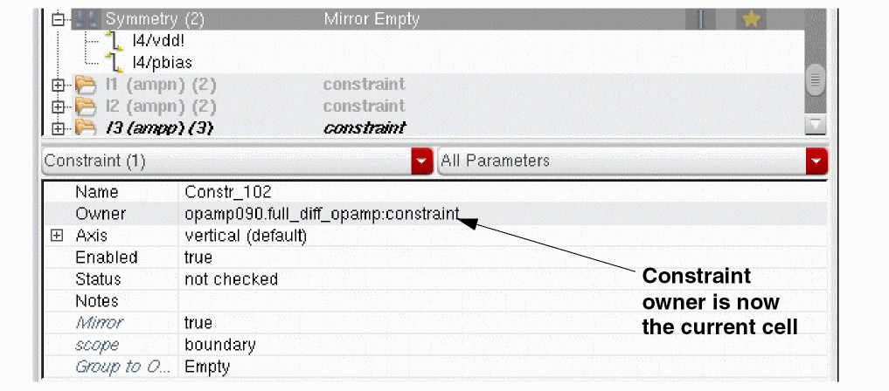
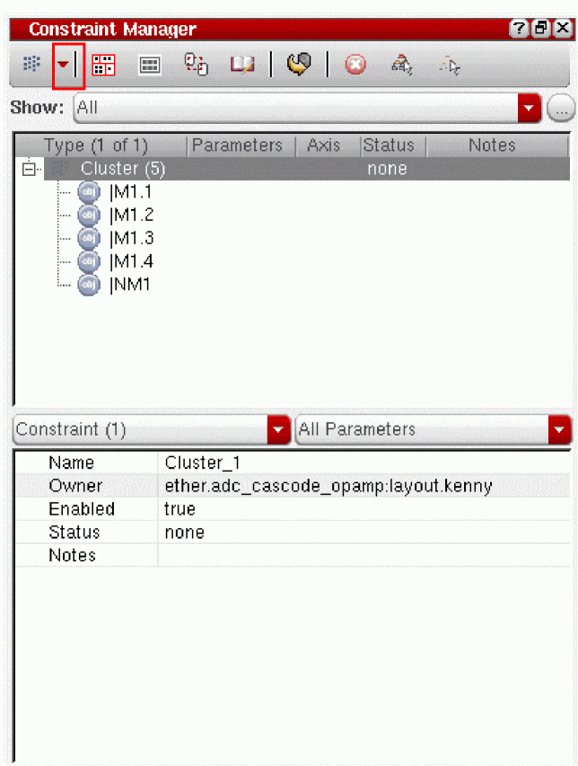

1
The Constraint Manager Assistant
The Cadence® Virtuoso® unified custom constraint management system allows you to establish design needs, save them as constraints, and share those constraints across specification, simulation, and implementation to drive the accelerated layout solution with reduced errors. A constraint-driven design preserves the design intent by enabling efficient design collaboration.
The unified custom constraint management system is available in:
- Virtuoso® Schematic Editor XL
-
Virtuoso® Layout Suite XL and higher tiers
Constraint location and creation functionality is available in the above applications using The Circuit Prospector Assistant and The Constraint Manager Assistant.
The Constraint Manager and the Circuit Prospector assistants can be accessed from the Constraints Workspace Configuration and the Constraints-Helper Workspace Configuration as well as through the menu and toolbar selections discussed later (see Accessing the Constraint Manager and Accessing the Circuit Prospector).This user guide focuses on the creation and use of constraints in the Constraint Manager and Circuit Prospector assistants in Schematics XL. For more specific information on physical design constraints and their uses in Layout XL, see Constraint Manager in Layout XL.
This user guide is aimed at developers and designers of integrated circuits and assumes that you are familiar with:
- The Virtuoso Studio Design Environment and application infrastructure mechanisms designed to support consistent operations between all Cadence® tools.
- The applications used to design and develop integrated circuits in the Virtuoso Studio Design Environment, notably, the Virtuoso Layout Suite, and Virtuoso Schematic Editor.
- The Virtuoso Studio Design Environment technology file.
- Component description format (CDF), which lets you create and describe your own components for use with Layout XL.
Constraints Workspace Configuration
The Constraints workspace configuration assists you in the creation, selection, and editing of constraints.
You can access the Constraints workspace from the Virtuoso® Layout Suite XL, and the Virtuoso® Schematic Editor XL by using one of the following methods:
- Selecting Constraints from the drop-down list box in the Workspace Configuration toolbar.
- Selecting Window – Workspaces – Constraints.
The Constraints workspace comprises of the following assistants:
- The Constraint Manager Assistant
-
The Navigator assistant
For more information, see the Navigator Assistant in the Virtuoso Schematic Editor User Guide -
The Property Editor assistant
For more information, see the Property Editor in the Virtuoso Schematic Editor User Guide
For more information on workspaces, see the Getting Started with Workspaces and Working with Workspaces chapters in the Virtuoso Studio Design Environment User Guide.
Constraints-Helper Workspace Configuration
The Constraints-Helper workspace configuration assists you in the creation of constraints.
You can access the Constraints-Helper workspace from the Virtuoso® Schematic Editor XL (only) by using one of the following methods:
- Selecting Constraints-Helper from the drop-down list box in the Workspace Configuration toolbar.
- Selecting Window – Workspaces – Constraints-Helper.
The Constraints-Helper workspace comprises of the following assistants:
For more information on workspaces, see the Getting Started with Workspaces and Working with Workspaces chapters in the Virtuoso Studio Design Environment User Guide.
An Introduction to Constraints
A simple way to define a constraint is to consider it as an objective that can be used to influence the possible implementation, placement, or routing in a system. In the context of layouts and schematics, this would be a design object with respect to its goal. Constraints are therefore requirements that need to be followed during design implementation.
This document refers to designs as being the full set of design objects in a design hierarchy, including all instances, nets, terminals, pins and instance terminals expressed as cell, instance or occurrence. By understanding constraints in your design hierarchy, you can determine specification limits for design objects.
A constraint can have parameters that are pre-defined name-value pairs that further define the design intent and the status of that constraint.
Virtuoso Unified Custom Constraints - A Use Model Overview
The Virtuoso Unified Custom Constraints system provides for constraints to be captured alongside connectivity in schematic applications to form a full design specification. This unique capability allows electrical designers to capture additional concerns to ensure that the electrical performance of their design is guarded against unwanted electrical side-effects during implementation.
These additional physical requirements can include:
- Degrees of device matching
- Nets that require symmetrical routing
- Nets that require shielding
- Capacity to carry current, guard rings and so on.
This formal specification facilitates a vastly improved dialog between front-end and back-end engineers.
Constraint Manager Overview
To provide for this improved dialog, the Constraint Manager is available as a docked assistant inside both the Virtuoso Schematic Editor (VSE) and the Virtuoso Layout Suite (VLS) at the XL tier and above, displaying specification and implementation constraints respectively.
The history of specification and implementation constraints are tracked via creation, last modified, and last checked timestamps (see Constraint History) that also identify the reason for the change and the person or application that made that change. Additional implementation constraints can be directly entered into the VLS Constraint Manager by the back-end engineer.
Constraints can also be overridden (see Overriding Constraints), and this state is clearly marked so that the specification and implementation can be brought back into alignment with further discussion between front-end and back-end engineers.
Devices can also be carefully specified in the VSE Constraint Manager via direct access to the VLS modgen device builder. Specifications can also be applied to cells as well as designs (see Creating Constraints at Different Design Levels), providing stronger control of IP as well as designs.
In summary, the Constraint Manager enables the specification to be carefully managed and implementation progress be tracked.
Constraints Database
The provision of a unified constraints database, accessible using the Constraint Manager, provides constraint storage for and access to, for example, many types of constraints including:
- sizing and optimization constraints
- floorplanning constraints
- interactive and auto-placement constraints
- interactive and auto-routing constraints
Circuit Prospector Overview
Virtuoso Unified Custom Constraints offers a valuable assistant in VSE XL to automate or assist with the constraint create process for designers. The Circuit Prospector Assistant is capable of finding circuit sub-structures in a design then generating the right set of constraints. Structures covered as standard include cascades, current mirrors, differential pairs, and so on.
As the Circuit Prospector is extensible, many other structures can be added to Circuit Prospector’s library by CAD departments and designers.
If you have a structure in an existing design (and have already populated it with a set of appropriate constraints), the Circuit Prospector can snapshot the structure and its constraints, and add it to its library. The Circuit Prospector provides the means to generate constraints quickly, accurately, and repeatedly. The barriers to constraint driven design have therefore been significantly reduced with the introduction of the Circuit Prospector.
The various components of the constraint-driven flow, from constraint specification to implementation by applications and automatic status tracking, help to accelerate the design process significantly and augment specification-driven design.
The Constraint View
The constraint view name (default constraint) is displayed in the Parameters column in the Constraint Manager.
- If the constraint view is in read-only or edit mode and unedited, the constraint names and related information are displayed in black. The name of the constraint view appears in bold.
- If the constraint view has been edited and not saved yet, its name appears as bold italic.
See also: Creating Constraints in the Constraint Manager.
Multiple constraint views can be associated with each schematic. In terms of Save, Save a Copy, Discard Edits, and Close, constraint views remain in sync with the associated schematic.
CI_SAME_CELL_UNIQUE_SCHEMATIC_CACHE environment variable.A difference can arise when the design hierarchy is read-only or unmodified, but the constraint view has been modified. Allowing constraint changes without modifying the design is an important reason for storing constraints separately from the database cellviews.
Constraint Name Column
Constraint names can be displayed as a column in the Constraint Manager. To view the shortcut menu, right-click the filter and select Column — Name option, as shown below:
The constraint names are displayed in the new Name column of the Constraint Manager assistant.
Changing a Constraint View Name List
constraint”. The rest of this section will be of interest only if you need more than one constraint view per schematic or if you require to use alternative names for your constraint views.You can specify the constraint views that you want to use in your design by modifying the global constraint view list, where by default “constraint” is used as the view name (see Constraint Manager Options Form (Schematic) for information on the Global Constraint View List option).
However, when generating a layout or running a simulation, the constraint view to be used needs to be specified in the constraint view list of the physConfig (through CPH, see
When VLS XL (and higher tiers) is launched, VSE XL picks up the constraint view list that has been set in the physConfig. Sub-configurations can also be created.
On the rare occasion that a config cannot be used, or does not exist, constraint views can also be configured globally using the environment variable.
constraint” as the default constraint view name, and perhaps create additional constraint view names when overrides are required.Constraint Storage
Constraint storage differs from schematic to layout. In the schematic, constraints are stored in an OpenAccess database (hierDesign.oa) that resides in a view called constraint view; whereas, in the layout, the constraints are stored in the layout database itself.
When you open in Schematic XL a design that does not have associated constraints, a constraint view is not created. A constraint view is created when you:
- Create the first constraint by using:
- Run the following SKILL functions:
- Transfer constraints from layout to schematic.
- Load constraints from another view.
- Create an axis by using ciAxisCreate.
- Open Process Rule Editor.
- Create a process rule.
- Create a design Constraint Group.
Ensuring that the Constraint View Is Editable
Checking out a schematic view does not check out the (companion) constraint view automatically and the constraints remain grayed out in the Constraint Manager assistant. Therefore, if you want to open the constraint view in edit mode, you must select the Make Editable option from the Save Constraints drop-down list box on the Constraint Manager toolbar.
Introducing the Constraint Manager Assistant
The Constraint Manager dockable assistant pane allows for the addition, modification, and deletion of constraints from/to the Cadence Constraint Storage system. The Constraint Manager user interface comprises of two main component parts; Constraint Browser and Constraint Parameter Editor.
The Constraint Manager is available as an assistant in both schematics and layout. In Schematic XL, as shown in the figure below, the Constraint Manager displays the content of the constraint view being used as per a given configuration.
In Layout XL, the Constraint Manager displays the constraints that currently exist in the layout.
The Constraint Manager displays a full set of constraints for a design wherever you are in the hierarchy with the current cellview, and wherever the constraints were created in that hierarchy. The Constraint Manager displays a full set of constraints for the current cellview and below.
Only those cells at the current level can be edited (those with a white background). Constraints, with a gray background, that are found at a lower level cannot be edited.
Examples of constraints include matching, symmetry, orientation, matched orientation, IR drop, clustering, alignment, area, distance, boundaries, guard rings, custom module generators (modgens), cell plans, and clusters.
The Constraint Manager also keeps track of all added constraints by grouping constraints by instance or
The Constraint Manager allows designers to manually create constraints by selecting groups of instances, nets, pins, and terminals from the design canvas and applying constraints to them. For example, a designer may look to apply a set of constraints to common circuit structures, related devices (such as the same size, area, or type), devices with shared characteristics and connectivity, and symmetrical devices with specific properties. For information on how this information is captured see The Circuit Prospector Assistant.
The figure above shows the Constraint Manager assistant in Layout XL. Some of the Constraint Manager Toolbar options differ from those available in Schematics XL. In addition, the constraints created using the Constraint Manager in Schematics XL will also be reflected (transferred) in the Constraint Manager in Layout XL (for more information on this, see Transferring Constraints Between Schematics and Layout in the first instance).
Accessing the Constraint Manager
You can access the Constraint Manager by:
- Selecting Window – Assistants – Constraint Manager.
-
Selecting Constraint Manager from the Toolbars context-sensitive menu.The Constraint Manager is also automatically loaded when you select the Constraints or Constraints-Helper (schematics only) default workspaces from the drop-down list box on the Workspace Configuration toolbar (see also the Constraints Workspace Configuration and the Constraints-Helper Workspace Configuration).
Constraint Manager Toolbar
The Constraint Manager toolbar varies when accessed from Virtuoso Schematic XL and Virtuoso Layout XL. The images below show the difference.
Figure 1-1 Constraint Manager toolbar (Virtuoso Schematic Editor XL)
Figure 1-2 Constraint Manager toolbar (Virtuoso Layout XL)
The Constraint Manager toolbar provides the following options (available in both schematics and layout unless otherwise stated):
|
Saves the constraints listed in the Constraint Manager to the constraint view that is currently in use (and is configured) with the given schematic. The main VSE menu File – Save/Save a Copy/Discard Edits options also update for constraint use. For example, Save (Constraint) will display when a constraint update has been made but not yet saved. Consequently, the File menu save options can also be used to save constraint status. Click the Save Constraints drop-down list box for the following options: |
|
- Save a Copy (schematics only) |
Invokes the Save a Copy form which allows you to save a copy of the current view. This allows you to save different constraint views (see The Constraint View). |
- Load From (option available in schematics and as a standalone toolbar option in layout) |
Invokes the Load Constraints form. The Load From option allows you to populate the Constraint Manager assistant with constraints of a corresponding cellview (including any saved templates), from another library. Figure 1-3 Load Constraints from an External View
Alternatively, you can use the ciLoadConstrFrom SKILL function to load the constraints from the source cache to the target cache of the same type.
Any constraint inconsistencies or corruptions will be cleared when constraints are loaded. In such cases, a warning message is also displayed in the CIW advising you of this action. On completion of the constraints loading process, an INFO message is displayed in the CIW listing the count of constraints, parasitic constraints, and constraint groups that were successfully loaded from the specified cellview. In VSE, the constraints can be loaded from a constraint cellview, while in VLS constraints can be loaded from a layout cellview. To be relevant, and in-context, the members of the loaded constraints must have the same instance or net names as those in the current cellview. |
|
|
When Replace mode (the default) is selected, all constraints in the Constraint Manager assistant will be purged from the cache before the new constraints are loaded. If Append mode is selected, the new constraints from the selected cellview will be added to the existing constraints in the Constraint Manager assistant, except where the consistency checker detects a conflict with an existing constraint. If the constraint name conflicts with an existing constraint name, the loaded constraint will be renamed. However, if the consistency checker detects an incompatibility between an existing constraint and a new constraint, the loaded constraint will not be created. |
- Discard Edits (schematics only) |
Select to discard any edits made to constraint values since the last save. The Discard Edits pop-up window is displayed asking you to confirm that you want to discard edits. The File – Discard Edits (Constraint) option in the schematic editor can also be used to discard any constraint edits made. A discard edits form is also displayed for confirmation. |
- Make Read Only/Editable (schematics only) |
Select to change the constraint view’s mode from edit to read-only, or conversely. When you choose to switch the constraint view to read-only mode, the Make Read Only form is displayed. This form allows you to choose whether to save or discard your changes, if any, before making the constraint view read-only. |
|
|
Checking out a schematic view does not automatically trigger a check out of the (companion) constraint view. Therefore, you might see that the constraint view remains grayed out in the Constraint Manager even after you have checked out the schematic view. To ensure that the constraint view is in edit mode, you must select the Make Editable option from the Save Constraints menu on the Constraint Manager toolbar. This assumes that the schematic view was not initially opened in read-only mode.
When a constraint view is in read-only mode, for example after setting to Make Read Only, the Constraint Creation menu and the Update Schematic Constraints and Delete buttons appear disabled. The text of the constraints view directory, and the text of the constraints contained directly within, are also be grayed out.
|
- Options (schematics only) |
Displays the |
|
Creates the selected constraint comprising of the currently selected object group members (as selected in the design canvas or the Navigator Assistant). Constraints that cannot be generated with the current object selection will be grayed out. For detailed information, see Constraint Creation and Current Object Selection and Constraint Creation History. Individual constraints are categorized and located in the following related constraint sub-menus: Electrical, Placement, or Routing. For more information on what constraints can be found in each constraint category and specific constraint creation conditions that need to be met for each constraint, see The Constraint Manager Assistant. In addition to these three constraint sub-menus, you have the Rapid Analog Prototype sub-menu. The constraint generators available under this sub-menu are the same as:
|
|
When the Constraint Manager assistant is opened in read-only mode, the Constraint Creation menu will be grayed out to prevent creation of any constraints. For more information on how to create constraints, see Creating Constraints in the Constraint Manager.
See |
|
|
Lets you create a constraint on a design intent using the Constraint Manager. For more information on design intents, refer to the Virtuoso Design Intent User Guide. |
|
- CloneFamily |
A Clone Family Select some devices on the canvas and the CloneFamily submenu gets enabled in the Constraint Creation menu as shown below. The Clone Family template is created with a Clone Def constraint on the selected devices. |
|
|
Adding Clone Def to an Existing Clone Family Template To create one or more clones in the schematic with the same topology as the selected clone source, do the following:
|
|
|
The Capture Clone form displays the following two list boxes and buttons to change the orientation of the dragSet: |
|
|
|
|
|
For example, the figures below show the difference in highlights based on pointer movement over different target devices. The first figure indicates all four target devices under the pointer have the same topology as the source devices; whereas, in the second figure, only two target devices out of four match. |
|
|
|
|
|
While creating clones, you can:
|
- Common Centroid |
The Common Centroid |
|
|
The order of devices selected is important. Therefore, if you have four devices currently selected either in the canvas or in the Navigator, choosing Common Centroid displays the Common Centroid form. The Common Centroid form has the following options:
|
|
|
For example, if four devices are selected in the order of A, B, C, and then D, the Common Centroid template created contains three symmetries: the pairs AB and CD will be on the same vertical axis, and AC will be on a horizontal symmetry axis. An optional orientation with all four devices is also added, depending on the value of the Orientations option described above.
Editing an orientation constraint within the template is prevented by the template callback, as is the deletion of any templates. Editing symmetry constraints is however allowed.
While creating a common centroid template, you need to first create the orientation constraint. If this constraint is created successfully, you need to continue with the symmetry constraints creation. Otherwise, you first need to find an existing orientation constraint with same members and parameters. If you are able to find an existing orientation constraint with same members and parameters, you need to mark this constraint to be moved into the template, otherwise abort the template creation. |
|
|
While creating the symmetry constraints, if any of the symmetry constraint cannot be created, then you need to delete the constraints that are already created for this template and abort the template. However, for symmetry constraints, you do not need not to find an existing constraint. This is because the axes chosen are always unique or from the existing common centroids.
In addition, to avoid displaying of messages during constraint creation, you can create the constraints in the silent mode. This can be done by making the argument |
|
|
A Common Centroid template can also be created in SKILL by using the template definition name " ciTemplateCreate cache "commonCentroid" ?members '( '("A" 'inst) '("B" 'inst) '("C" 'inst) '("D" 'inst)) |
|
|
The
?userParams argument for ciTemplateCreate specifies the axes names and the optional orientation:'('("vertical" VAxisName_s) '("horizontal" HAxisName_s) '("orientation" "vertical" | "horizontal"))
The axes names and orientation can be specified in any order or combination, and are all optional. When an Axis parameter is missing, an axis is created, but when the Orientation direction is missing, the orientation constraint is not created. The calling function is responsible for creating and naming the axes and ensuring that the axes have the correct direction before it calls |
|
|
As is the case with all templates, any related constraints are fully transferable to the layout, and all transferred constraints form part of the resultant layout template.
If the Common Centroid template is created in a schematic, and the
In the example above, if
If an orientation constraint exists in the schematic template, it will have all
You can also create a Common Centroid template on two instances, given the condition that the
For example, a Common Centroid is created, in a schematic, on two instances ( |
|
|
Similarly, when
Common Centroid is an example of a Constraint Template. Templates can be created and edited for various types of symmetries, alignments, and so on. For information on creating constraint generators, see Creating Custom Constraint Generators in the Virtuoso Unified Custom Constraints Configuration Guide.
|
- Matching (strength) |
Matching (strength) is an example template that can be used to generate constraints for objects that are currently selected in the design canvas. Selection will invoke the Matching (strength) form. Using this form, you can set constraint matching strength to be either low, medium, or high. |
|
|
If matching constraints cannot be achieved, individual constraints inside the matching
Matching (strength) is an example of a Constraint Template. Templates can be created and edited for various types of symmetries, alignments, and so on. For information on creating constraint generators, see Creating Custom Constraint Generators in the Virtuoso Unified Custom Constraints Configuration Guide, and ciRunMatchingConstraintsGenerator SKILL function in the Virtuoso Unified Custom Constraints SKILL Reference.
|
|
If you have Virtuoso Design Intent enabled, this option will be available in Layout XL and lets you create a design intent using the Constraint Manager. For more information on design intents, refer to the Virtuoso Design Intent User Guide. |
|
|
Drop-down menu that lists available constraint editing functionality: Module Generator..., and the Process Rules Editor.... Selecting any of these options will launch the associated application. Whatever constraint editor was selected last will be shown as the “default” option to be selected for next use. |
|
- Module Generator... |
Invokes the layout editor and displays the Modgen Editor. The Module Generator provides a simple and fast method of generating multiple Pcell instances into a complex, highly matched array based on defined Pcell leaf structures.
For more information, see |
- Process Rule Editor... |
Invokes the Process Rule Editor form. From here you can edit process rules for the technology file, the design, or only for selected objects. Alternatively, you can create new constraint groups or process rules.
For more information, see |
|
When you click Check Constraints from the Constraint Manager assistant of the Schematic window, if the cellview contains constraints the Constraint Status and
To access the Schematic Rules Check Setup form, select Check – Rules Setup in VSE. For more information, see Constraints Checks in the Virtuoso Schematic Editor User Guide.
|
|
|
When you click Check Constraints from the Constraint Manager assistant of the Layout window, PVS-CV gets launched to check whether the specified constraints have been implemented correctly in the layout. Alternatively, you can use the ciCheckConstraints SKILL function to run the constraint checker. After the checks, the status of the constraints gets updated in the Constraint Manager assistant as any one of the following: Passed, Failed, or Not Checked. In addition, any constraint violation detected during this check by PVS-CV is reported in the Annotation Browser assistant of the Layout window.
PVS-CV is a licensed tool. Therefore, to use the Check Constraints option from the Constraint Manager assistant of the Layout window, the To open the PVS-CV form, in the Constraint Manager assistant, select Options from the Constraints Check drop-down list. The PVS-CV Options Form is displayed, as shown below. |
|
|
The options for running PVS-CV from Constraint Manager is taken from the The PVS-CV Options Form contains the Input and Constraint Options panels represented by their icons with appropriate names. |
|
|
When you open the PVS-CV form, the Input – Layout section is displayed by default. You can set the following fields in the Layout section: |
|
|
The Constraint Options panel consists of three tabs related to different groups of constraint types.
The Constraint Options panel is used to set up constraint types that you want to check. |
|
|
To enable or disable some specific constraint types, just click the appropriate check box against the constraint name.
For more information on running PVS-CV, see the Running PVS CV chapter in the Cadence Physical Verification User Guide. Also, for detailed description on PVS-CV functionality, see Appendix H- PVS CV Functionality in the Cadence Physical Verification User Guide. |
|
|
Invokes a web page that compares the constraints set on the schematic and layout views, sorting any differences into various categories. Each constraint is detailed in the report with each change that has been made to its members, parameters, or attributes being flagged. For more information, see Comparing Constraints between Schematic and Layout.
For a video demonstration of the process of generating a constraint comparison report, see Comparing Constraints Between Schematic and Layout on Cadence Online Support.
|
|
|
Performs a constraint status update for the existing schematic constraints against the equivalent constraint status in layout. For more information, see Updating Constraints and Constraint Status. |
|
|
Update Selected Layout Constraints From Schematic |
Performs a constraint status update for the existing layout constraints against the equivalent constraint status in schematics. For more information, see Updating Constraints From Schematic to Layout. |
|
Contains options to propagate constraints through the layout hierarchy. For more information, see Pushing and Pulling Constraints in a Schematic or Layout Hierarchy |
|
|
Toggles on and off the display of the selected constraints in the Constraint Manager assistant. This feature helps you in identifying only those constraints that are currently selected in the design canvas. This can be especially useful if you have a high number of constraints listed in the Constraint Manager. |
|
|
Deletes the currently selected constraint (or object group) in the Constraint browser. |
|
|
Toggles on and off the display of the parameter editing pane. |
Customizing Constraint Manager Assistant Content
You can customize the options on display in the Constraint Manager toolbar, and the Constraint Manager assistant itself.
To add/remove Constraint Manager user-interface options and feature content:
-
Right-click over the Constraint Manager toolbar area. This displays a context-sensitive menu that provides options for customizing the interface. For example, the figure below shows the context-sensitive menu displayed in Schematic XL.
- Select/deselect the elements that you want to have on display in Constraint Manager assistant.
Saving and Restoring Constraint Manager Customizations
All Constraint Manager user-interface customizations are saved to, and restored from, setting files that are stored in the .cadence/dfII/ci directory.
All settings found in the Cadence Search Path, as specified in setup.loc, will be loaded in order. This allows for default settings files to be stored under share/cdssetup/dfII/ci and for CAD departments to specify their own customizations.
Module Generator and Process Rule Editor Constraint Manager Options
You can run constraint editing functionality, such as layout cell planning and modgen functionality, by selecting Module Generator..., or Process Rule Editor... from the Constraint Editor menu on the Constraint Manager Toolbar. Alternatively, you can open an external constraint editor by double-clicking a constraint in the Constraint Browser. Use the 'constraintType argument of the ciRegisterConstraintEditor SKILL function to specify the constraint type that can be edited using a particular constraint editor. In addition, you can configure to open an external constraint editor when you double-click a template in the Constraint Browser or click any template parameter in the Constraint Parameter Editor pane. For detailed information, refer to Defining the Interface for Editing a Template and its Parameters.
The constraint editor that was selected last is shown as the “default” option to be selected for next use.
If these buttons are available, they will be displayed as either enabled or disabled (grayed out) as follows:
-
Both buttons are enabled if there is nothing selected in the Constraint Manager. Selecting either button will mean that you want to create a new
ModGenorCellPlan. -
Both buttons are disabled if you select a constraint that is not a
ModGenorCellPlan.
For more specific information on physical design constraints and their uses in Layout XL, see Constraint Manager in Layout XL. See also
For information on how to plug in other third party constraint editing tools, see
For more information on the Process Rule Editor, see The Process Rule Editor
Updating Constraints
The Update Schematic/Layout Constraints options, found on the respective application Constraint Manager toolbars, are used to synchronize the constraints between the two views.The status of the constraints (see Constraint Status) in one view, with respect to the other view, is captured in the status column along with information as to whether or not the constraints are, for example, enforced or violated.
The enablement of the Update Schematic/Layout Constraints options and the content of the icon tooltip is dependent upon the current setting of the environment variable and whether or not any constraints are currently selected. Also, see
Constraints in the target view will be updated if the corresponding constraints in the source view are more recent. This will only apply when you choose to update all constraints.
Only those constraints that exist in both schematics and layout can have their status updated in the schematic Constraint Manager.
When the equivalent layout cellview is open, the schematic Constraint Manager will automatically update the latest layout status whenever you switch between schematic or layout view tabs. The Update Schematic Constraints command ensures that the constraints in the schematic are in sync with the layout, by pulling in all/selected constraints in the layout into the constraint view, and updating the status information displayed in the schematic Constraint Manager.
Figure 1-4 Update Schematic Constraints option on the Constraint Manager toolbar
To update constraints in the schematic Constraint Manager (constraint view) and reflect constraint status in the layout:
- With the Constraint Manager assistant on display in a schematic view, launch the layout tool (for example Launch – Layout XL).
-
If you now open the equivalent layout cellview, the layout Constraint Manager will automatically display inherited schematic constraints on any corresponding components and nets, in addition to any constraints that were entered directly in the layout.See Transferring Constraints Between Schematics and Layout which describes how schematic constraints are transferred to layout.
-
Clicking the Update Schematic Constraints option in the schematic Constraint Manager toolbar brings in the constraints in layout that do not currently exist in the schematic, and syncs up constraints that are different (have different parameters) between schematic and layout. In addition, the status of the constraints in the schematic are also updated.
Figure 1-5 The Status column in the schematic Constraint ManagerCurrently, only selected constraints will be updated using this process, and not selecting any constraints will serve as an “update all” operation.- For more information on the constraint status, see Constraint Status.
- For information on how to access a constraint comparison report, between schematic and layout, see Comparing Constraints between Schematic and Layout.
Controlling Constraint Updates Using the updateConstraints Environment Variable
The use model of the Update Schematic/Layout Constraints options can be controlled using the environment variable.
Update Schematic/Layout Constraints Options Tooltips
The content of the Update Schematic/Layout Constraints tooltip is dependent upon the current setting of the updateConstraints environment variable and whether any constraints are selected.
The tooltips can therefore be one of the following, for example:
- Update all schematic constraints from layout.
- Update selected schematic constraints from layout.
- Update all layout constraints from schematic.
- Update selected layout constraints from schematic.
- Cannot update schematic constraints because the corresponding layout is not open.
- Cannot update schematic constraints because "overview block1 constraint" is read only.
- Cannot update layout constraints because "overview block1 layout" is read only.
Editing a Constraint in Associated Constraint Generator Dialog Box
To edit a constraint, open the associated Constraint Generator dialog box by a double-clicking one of the following:
- The constraint template in the Constraint Manager assistant
- Any of the constraint parameter value in the Constraint Manager assistant’s property editor pane
For an example, see Editing a Generated Modgen (GenericModgen Template).
Constraint Browser
The Constraint Manager displays design constraints (in creation order), along with their parameters, in the Constraint Browser. You can use the Constraint Manager to browse, add, modify, and delete constraints.
Figure 1-6 The Constraint Browser (schematics)
Each constraint is displayed in its own row, with the browser itself comprising a selection of columns and cells that display properties associated with each constraint. Icons and variable colors and fonts are used to aid parameter visualization. This sections discusses:
- Constraint Filters
- Constraint Browser Features
- Constraint Browser Context-Menus
- Constraint Browser Columns
Constraint Filters
Filters are used in the Constraint Manager to restrict the constraint types and members displayed to be only those that match certain, filtered, criteria.
For example, you can choose to only display those constraints of type Alignment and/or Correlation. Alternatively, you can choose to display all constraint types, but only show constraint members of a certain type, for example only nets and pins.
Constraint filter options are accessible from the Show pull-down on the Constraint Manager assistant.
Figure 1-7 Constraint Filter options on the Constraint Manager
Figure 1-8 Filters available from the Show pull-down on the Constraint Manager
Alongside any filters that you have created manually (see Creating a Constraint Filter), the Show drop-down also includes a list of (editable) template filters. In addition to providing the ability to filter on particular constraint types, these pre-defined constraint filters let you choose to filter constraints based on their timestamp/history information (for example All Created Today or All Modified Today) or to only view those constraints that are associated with placement or routing (All Placement or All Routing). By default, All constraints (types and members) will be displayed in the Constraint Manager.
Applying a Constraint Filter
-
Select the constraint filter that you want to apply from the Show pull-down in the Constraint Manager.
The Constraint Manager display will update to show only those constraint types and members that are associated with the applied constraint filter.
When a filter has been applied, the filter icon in the Constraint Browser will show as filled (in orange). Floating your cursor over the Type column header will also display what type of filter is currently applied.
Creating a Constraint Filter
To create a constraint filter:
-
Select the ... (Customize Constraint Filters) option adjacent to the Show pull-down.
This will display the Customize Constraint Filters form.
-
In the Filter Name field, overtype any current filter name and enter the name of the new constraint filter to be created.
-
In the Show section, select/deselect the Constraint Types that are to be shown (included) when the new constraint filter is selected in the Constraint Manager.
If you did not enter a new filter name by this stage, the Filter Name field will display <custom> once you start to customize the content of the, as yet, unnamed filter. A <custom> filter can be applied (by selecting the Apply button), but it cannot be saved (the Save icon at the top of the form will be inactive). -
Optionally, in the Show section, select/deselect the Member Types that are to be shown (included) when the new constraint filter is selected in the Constraint Manager.
-
Optionally, in the Show section, choose any history attributes that you would like to filter on using the Creation Date, Last Modified Date, and Last Checked Date options.
For more information on constraint history attributes, see Constraint History. -
Optionally, in the Show section, choose to only apply the new constraint filter to the objects currently selected in the design canvas (or in the Constraint Manager) by checking the Selected check box.
-
Optionally, in the Show section choose to filter on constraint Hierarchy filter settings.
Uncheck the Hierarchy check box to hide all constraint sub-directories in the Constraint Manager.
Check the Hierarchy check box to show constraint sub-directories in the Constraint Manager. The options contained in the Hierarchy filter now allow you to control the display of overridden constraints in different levels of the hierarchy.- Choosing to filter on Overridden sub-hierarchy will only show, in the Constraint Manager, those constraint sub-directories that contain overridden constraints.
- Choosing to filter on Un-overridden sub-hierarchy will only show constraint sub-directories that do not contain overridden constraints.
For more information see Creating Constraints at Different Design Levels and Overriding Constraints. -
Select the Save icon at the top of the form to store the new constraint filter.
The new constraint filter will now be available for selection from both the Show and Filter Names pull-downs for any cellviews opened.
Updating a Constraint Filter
To update a constraint filter (user created or template):
-
Select the ... (Customize Constraint Filters) option to the right of the Show pull-down.
This will display the Customize Constraint Filters form. - Select the constraint filter to be updated from the Filter Name pull-down.
- Optionally, in the Show section, select/deselect the Constraint Types that should now be shown (included) in the updated constraint filter.
- Optionally, in the Show section, select/deselect the Member Types that should now be shown (included) in the updated constraint filter.
- Optionally, in the Show section, check/uncheck the Selected check box to determine if the filter should only be applied to the objects currently selected in the Constraint Manager.
-
Select the Save icon at the top of the form to update the currently selected filter.
You will be prompted to overwrite the currently selected filter. -
Select Yes in the Save Filter form to update the filter.
The updated filter will now be available for selection from both the Show and Filter Names pull-downs.
Deleting a Constraint Filter
To delete a constraint filter (user created or template):
- Select the ... (Customize Constraint Filters) option to the right of the Show pull-down to display the Customize Constraint Filters form.
- Select the constraint filter to be deleted from the Filter Name pull-down.
-
Select the adjacent Delete Filter button.
You will be asked to confirm the deletion of the selected constraint filter. -
Select Yes in the Delete Filter form to confirm the deletion of the selected constraint filter.
The constraint filter will now be deleted from both the Show and Filter Names pull-downs and the (show) All (constraints) filter will automatically be applied.
.cadence/dfII/ci/filters.Constraint Browser Features
You can use the Constraint Browser to:
-
Sort columns
You can perform an alphabetical sort on any column by clicking the column header. -
Customize browser display
You can choose what information you want displayed, and how it is displayed, by right-clicking over the column header area of the Constraint Browser. From here, you can set your preferred sort order, displayed columns, and so on.
For more information, see Constraint Browser Column Header Context-Menu. -
Handle in-context and out-of-context constraints
The Constraint Manager displays whether a constraint is currently in-context or out-of-context. That is, the constraint is in the same hierarchy, but as part of a different traversal.
Constraints that have a white background are constraints that were created in the current view (currently in-context), while those constraints with a light gray background were created in another view (currently out-of-context).
When a constraint is out-of-context, you can see where it was originally created by looking at the Owner constraint parameter in Constraint Parameter Editor.
All constraints are visible in schematic and layout. There are two exceptions for layout:-
If an out-of-context constraint has hierarchical members and the
CI_ALLOW_LAYOUT_HIER_OCCshell environment variable is not set, the constraint will not be visible. -
If a constraint is in-context, but has members of type modgen or cluster that are not visible because their members are hierarchical and the
CI_ALLOW_LAYOUT_HIER_OCCshell environment variable is not set.
You can transfer the following types of constraints:- All in-context constraints are transferable in schematic and layout except when a constraint is in-context and its members are themselves an out-of context constraint. For example, there is a modgen or cluster constraint which is out-of-context. If such a constraint is a member of another constraint, the parent constraint will not be transferred because the child constraint is out-of-context.
-
All out-of-context constraints in layout are transferable if their members are hierarchical and the
CI_ALLOW_LAYOUT_HIER_OCCshell environment variable is set.
-
If an out-of-context constraint has hierarchical members and the
-
Reorder columns
You can re-position a column by clicking and dragging the column header and dropping the column header in its new position. -
Drag-and-drop one constraint to add as a member of another constraint
Existing constraints can be dragged and dropped onto another constraint as long as that constraint can support the dragged constraint as a member.
For example, this allows Modgen constraints to be dragged and dropped into Symmetry constraints, Alignment constraints, and so on. It also allows for Cluster constraints to be dragged and dropped into other Cluster constraints, as well as enabling a Cluster constraint to be dragged and dropped onto a Cluster Boundary constraint (replacing the Cluster that was associated with that Cluster Boundary). -
Display constraint type members
You can view all of a constraint type’s members by expanding one or more of the constraint Type branches.
To do this, click the horizontal arrow icon to the left of the constraint Type. Once expanded, all members (Inst,Net, and so on) will be displayed under the constraint type, for example all of instances or nets of constraint type Alignment or Orientation can be viewed. The arrow icon changes to be positioned vertically, and clicking again on this icon will collapse the view, hiding all constraint type members.
Figure 1-9 Some expanded constraints displaying their members
You can rearrange a constraint’s member order using drag-and-drop (although order is not of importance in most constraints). When commencing a drag-and-drop, the cursor will change to reflect valid and invalid drop points. This rearrangement of the member order automatically triggers consistency check on the constraint.Constraint member details can be drag and dropped into applications that accept plain text, including the Search assistant (allowing you to quickly run searches based on the selected constraint member details). -
Highlight constraints on the canvas
You can select a constraint in the browser which causes the constraint members to be highlighted on the canvas using halos. For more information on halos, see Halo Highlighting.If you search on constraints using the Search assistant, selecting one or more constraint results in the Search assistant will cause the constraints to be automatically selected in the Constraint Manager. Double-clicking these results will also run the default action of selecting all constraint members and having these selections also cross-selected in the Navigator and Property Editor assistants. -
Display constraint member parameters in the Constraint Parameter Editor
Whenever a selection is made in the Constraint Browser, Constraint Parameter Editor will update (assuming that it is activated by double-clicking a constraint or by ensuring that the Constraint Parameter Editor option is selected in the Constraint Manager assistant toolbar) and present the associated parameters and parameter values of the selected constraints. If you select multiple constraints from the browser, you will be able to edit multiple constraints at the same time in the Constraint Parameter Editor pane.
StandardShift-select andControl-select is available for selection of multiple items in the browser.
For more information on selecting in the Constraint Browser, see Selection and Cross-Selection of Constraints. -
Cross selection with the Navigator
Selections made in the Constraint Browser will be reflected in the Navigator, and vice-versa.
For more information, see Selection and Cross-Selection of Constraints and the Navigator Assistant in the Virtuoso Schematic Editor User Guide. -
Resize/Re-Position columns
You can resize a column by clicking and dragging on the column header vertical sides. Double-clicking the vertical separator in any column header will also auto-size column width. You can re-position a column by clicking and dragging it to a new location. -
Tooltips
Tooltips are displayed for each constraint listed in the Constraint Manager by hovering the mouse cursor on a specific constraint.
These tooltips include:-
For the constraint directory in the current constraint view (see The Constraint View) - information on the library, cell, and view names, and the number of constraints in the current view.
-
For individual constraints - information on the default constraint name, the constraint type, its ownership setting, its constraint member information, any override information.
-
For the constraint directory in the current constraint view (see The Constraint View) - information on the library, cell, and view names, and the number of constraints in the current view.
-
Use toolbar shortcuts
The Constraint Browser contains a Constraints toolbar which provides shortcuts that allows you to quickly add and delete constraints, create or remove templates, and so on. For more information, see Constraint Types. -
Use context-menu options
Right click over the Constraint Manager assistant to display a related context-menu. For more information see Constraint Browser Context-Menus.
Key Bindings
You can use the following bindkeys when using the Constraint Manager:
| Key Binding | Action |
Constraint Browser Context-Menus
Depending on where you right-click in the Constraint Browser, a different context-menu will be displayed.
Constraint Browser Column Header Context-Menu
If you right-click over the Constraint Browser column header area, the following context-menu is displayed:
-
Selecting the Columns sub-context-menu displays the following menu:From here you can choose which table column headers that you want to display in the Constraint Browser. From here you can choose how you want to view information in the Constraint Manager.
-
By Constraint:
-
By Object Groups:
-
By Axis (see also Constraint Axis):
-
By Constraint:
-
Selecting the Sort By sub-context-menu displays the following menu:
From here, you can choose the sort order category that you want to apply to constraint display in the Constraint Browser. For example, you can choose to sort the constraints by Status, which lets you to group together those constraints that currently have a Passed or a Failed status.
From here, you can choose (filter) what constraint information is to be displayed. This could be to filter to only display constraints that have been created during a certain period, or to only display constraints of a certain type.
Constraint Browser Table Context-Sensitive Menu
If you right-click the Constraint browser table area, the following context-sensitive menu is displayed:
| Option | Description |
|
Adds a constraint member to the selected constraint. For more information see Adding Constraint Members. |
|
|
Expands the directories, templates, or hierarchy based on the way you accessed the context-sensitive menu to select the Expand All Below option.
|
|
|
Collapses all the directories available in the Constraint Manager window. |
|
|
However, if a constraint is currently selected, then choosing this option will collapse the constraint to hide the members of the current constraint. |
|
|
If a constraint is currently selected, choosing this option will select all the member constraints in the browser (as shown in figure 1-10), in the Navigator, and on the design canvas. |
|
|
Creates one or more clones in the schematic with the same topology as the selected clone source. For steps, see |
|
|
Displays the Constraint Manager Options Form (Schematic). |
Figure 1-10 Using Select All Members Context-Sensitive Menu
Constraint Manager Options Form (Schematic)
Selecting Options from the Constraint Manager file menu displays the Constraint Manager Options form. The options form displayed in the schematic view is shown below. To view this same form in the layout editor, refer to the steps covered in the Constraint Manager Options Form (Layout) section.
| Option | Description |
|
For more information on this option, see Changing a Constraint View Name List. |
|
You can set a Halo Limit, which is set to a maximum of
For more information on the use of halos, see Halo Highlighting.
|
|
|
You can select the Show Folders check box to see the directories for sub-cell instances as well as the constraints at the current level schematic. These directories will be shown corresponding to all the children of the current cellview, initially with a question mark icon. Selecting the Show Folders check box activates the Enable Constraint Overrides and Enable Move Constraints to/from Current Cell check boxes.
For more information see Overriding Constraints.
|
|
For more information, see Moving Constraints to Current or Sub-Cells. Figure 1-11 Constraint browser table context-menu with advanced options added |
|
|
By default, the Select constraints after creation check box is selected in the Selection Behavior group box. As a result, after a constraint is created, it appears as selected in the Constraint Browser pane. When a large number of constraints are created simultaneously, this process of selecting the created constraints automatically can affect performance adversely. To prevent performance issues, you can use the following options:
|
Constraint Manager Options Form (Layout)
Selecting Options from the Constraint Manager Constraint Browser Table Context-Sensitive Menu will display the Constraint Manager Options form.
| Option | Description |
For more information on the use of halos see Halo Highlighting.
|
|
|
You can select the Show Folders check box to see directories for sub-cell instances as well as constraints at current level layout. These directories will be shown corresponding to all children of the current cellview, initially with a question mark icon.
The question mark icon indicates that the hierarchy inside the child has not been checked for the existence for any constraints.
On clicking the plus icon against a directory name, the number of constraints inside that directory will be displayed. In addition, the question mark will be removed against the directory icon in case there are constraints inside the directory. |
|
|
By default, the Select constraints after creation check box is selected in the Selection Behavior group box. As a result, after a constraint is created, it appears as selected in the Constraint Browser pane. When a large number of constraints are created simultaneously, this process of selecting the created constraints automatically can affect performance adversely. To prevent performance issues, you can set a Selection Limit, which is set to a maximum of |
Soft Blocks
In the Constraint Browser of the layout window, directories for soft block instances are displayed right after the current level constraints. You are allowed to create pin and boundary constraints in the soft blocks in the L1 editing mode.
You can create boundary constraints on a soft block by selecting the soft block boundary. This can be done by making the soft block objects selectable in the object palette and using the constraint creation menu.
You can also create pin constraints on soft block pins from the current level. Constraints created on boundaries and pins of soft blocks are stored in the soft block itself and not at the current level. However, once constraints are created, they will be displayed inside directories for soft block instances.
When the soft block instances are editable, you can also modify the constraint parameters for pin and boundary constraints on soft blocks. You can also delete the existing pin and boundary constraints for these soft blocks.
Unlike other directories, the soft block directories will not appear grayed out unless the soft block is in the read-only mode. In addition, if the soft block contains instances then the hierarchy below those instances will be shown but will remain non-editable.
The soft block icons are used to indicate soft block instances in the Constraint Browser, as highlighted in the figure below.
Finished Blocks
Constraints inside directories that represent instances for finished blocks will appear grayed out and remain non-editable. In addition, when a constraint inside a finished block or a soft block is selected, all editors — Module Generator, and Process Rule Editor—will be disabled.
Stop Point Icons
In earlier releases, the directories disappeared from the schematic Constraint Browser below the layout stop points whenever the Layout XL window is opened. Layout stop points are schematic symbols for which a layout master existed, as per the specified layout view list. However, now a logical hierarchy is displayed in the schematic Constraint Browser below stop points. The stop points are indicated visually using the stop point icons. Therefore, whenever you open the VLS XL window, the directory icons in VSE XL will automatically change to the stop points icons. When you close the VLS XL window, the stop-point icons will change back to directory icons.
Constraint Browser Columns
The Constraint Manager has the following sortable, and re-positionable, columns:
- Type (see Constraint Types and Default Constraint Types)
- Axis (see Constraint Axis)
- Parameters (for information on all the parameters associated with each default constraint type see Default Constraint Types).
- Status (see Constraint Status)
- Notes (see Constraint Notes)
Constraint Types
The Type column in the Constraint Browser displays the constraint type, for example Symmetry, Alignment, and Orientation.
A constraint type is a formal definition of a design annotation that describes required electrical or physical relations between a set of design objects (constraint members) through a set of pre-defined constraint parameters, such as symmetry and orientation.
The number in parenthesis after each constraint type shows how many members (instances, nets, terminals, pins, and so on) that each constraint has. A directory is also displayed directly below the Type column header. This directory is The Constraint View directory for the current constraint view and provides information on the cell/view name and the number of constraints in the current constraint view.

Each constraint type must be a member of one constraint category. Constraint categories allow you to manage the loading and viewing of constraint types. For example, when retrieving the constraint cache for a design, applications can specify the categories of constraint that they are interested in. Constraints retrieved from the cache can also be filtered according to category.
You can create new categories and also place constraints in additional categories to allow you to view your constraints in a more convenient way. For information on creating categories see
- For information on default constraint types see Appendix A, “Default Constraint Types”.
Constraint Parameters
The Parameters column in the Constraint Browser summarizes the important constraint parameter and value settings for each displayed constraint.
A pre-defined constraint parameter describes the required electrical or physical implementation to the constraint-aware tools.
Constraint members will also often have their own parameters and values and these can be summarized when a constraint is expanded to reveal its members (see Constraint Browser Features).
Both constraints and their member parameter values can be edited using Constraint Parameter Editor in the lower section of the Constraint Manager.
For information on all the parameters associated with each default constraint type see
Member Parameters
Individual constraint members can also have their own parameters. For example, each member of an alignment constraint can have a specific “side”, such that in an alignment of 5, 3 of them have their top side aligned and the remaining 2 have their bottom side aligned. Only those parameters that make sense to be applied to members can be set on members.
Constraint Axis
The Axis column in the Constraint Browser displays information on axis direction, either vertical or horizontal.
A constraint axis is a virtual reference support object used by symmetry, alignment, and distance constraint types to define the direction and location of symmetrical pairs and aligned objects.
Axes then are constraint specific objects that are associated with particular Default Constraint Types (mentioned above). Each axis can be associated with more than one constraint, so that multiple symmetries and multiple alignments to the same axis can exist.
Constraints axes can only be created if an axis is created and stored in the constraint cellview in the front-end.
The following table describes the parameters associated with constraint axes.
| Axis Parameter | Type | Default Value | Allowed Values |
Symmetry and Alignment constraints do not have their own direction and coordinate parameters, but instead should be associated with an axis.
See also Editing the Constraint Axis Parameter.
Constraint Status
The Check option on Constraint Manager Toolbar can be used to check the enforcement status of constraints in the schematic or layout. Additionally, for example, the status of each layout constraint, with *respect to the schematic, can be updated dynamically, or on demand, using the Update Schematic Constraints command.
* For example, if it exists in the schematic or not, or if its parameters match its schematic counterpart.
A constraint’s current status is indicated using symbols and strikethrough text.
The Status column also displays the status of constraint templates. For more information, refer to the Viewing Template Status in Constraint Manager section.
| Constraint Status Icon | Constraint Name and Definition |
|
|
Informs that the constraint is new in the current view (for example, the schematic view), but does not yet have a corresponding constraint in the other view (for example, the layout view). |
|
|
Informs that there is a difference between this constraint and the corresponding constraint in the other view. The related constraint status tooltip describes what the differences are, which could be any or all of the constraint parameters, member parameters, member order, or axis parameters.
The Constraint Comparison Report can be used to examine any differences in more detail. For more information, see Comparing Constraints between Schematic and Layout.
|
|
|
|
|
|
Informs that the constraint is not currently active. This means that either it has |
|
|
Informs that the constraint has not been met (validated). For example, depending on the constraint, it is possible the parameters do not match, are not aligned, are not symmetrical, and so on. |
|
|
Informs that the constraint is new in this view, and has also been marked as passed. |
|
|
Informs that the constraint only exists in the current view and that it has also failed in this view. |
|
A constraint that is blank, with no icon, represents a constraint that has not yet been checked. |
Filtering Constraint Status
You can use Constraint Filters to only show in the Constraint Browser those constraints that have, for example, Passed or Failed status.
Constraint Conflicts
A conflict can be something that causes a constraint to fail its consistency check. For example, an instance cannot be a member of more than one symmetry constraint. If a symmetry constraint with members /I2/MP0 and /I2/MP1 is transferred to layout where the members are mapped to |I2|MP0 and |I2|MP1. Creating a new symmetry constraint in layout with members |I2|MP0 and |I2|MP2 would override the transferred constraint because the |I2|MP0 member causes a conflict.
For more information, see
Constraint Notes
In the Constraint Browser, if a page icon is displayed in the Notes column, it indicates that a note has been associated with the corresponding constraint.
Designers can add notes to constraints to provide more details about the purpose of the constraint or to record and special considerations for implementation.
Constraint notes cannot be added to constraint members. However, any existing constraint notes will be transferred to a new constraint when a constraint is moved to the current cell (see Moving a Constraint to the Current Cell) or to a sub-cell (see Moving a Constraint to Sub-Cells). In the case of moving to a sub-cell, all constraints will show the same note.
Figure 1-12 Notes have been added to a number of symmetry constraints
Any notes that have been applied to a constraint can be accessed from the Notes column in the Constraint Manager. You can see the content of a note by moving the mouse cursor over the Note icon to raise a tooltip.
By default, the note’s tooltip displays maximum 30 characters in a line width and 10 lines in height. If a line in the notes contains more than 30 characters, the characters after the 30th one get replaced with an ellipsis symbol in the tooltip. Similarly, if a note has more than 10 lines, the lines after the default 10th line are replaced with an ellipsis symbol in the tooltip.
To control the number of maximum characters in a line width or maximum number of lines that are visible in any constraint note’s tooltip, use the and environment variables.
For information about editing the tooltip content, see Editing the Note Parameter.
Creating Constraints in the Constraint Manager
Constraints can be created at the current level in the design hierarchy with members specified at different levels as you descend and return through a hierarchy, or by selecting the objects from any level in the Navigator Assistant (for an example of use, see Creating a Shielding Constraint and Setting a Shield Net).
When creating a constraint at the top level of a design, the name of the cell will be displayed in the Constraint Browser with the constraint view name and the number of constraints shown in separate brackets after it.
Constraint Creation Basics
This section covers nuances that you need to understand before starting to create a constraint.
Constraint Members
Constraint members can be instances, nets, pins, or terminals depending on the type of constraint.
A constraint member is specified by a fully qualified path from the root of the hierarchy, for example:
“(amsPLL.vco:schematic) /I18 (amsPLL.vco2phase:schematic) /MN0 (gpdk.nmos:symbol)”
Constraint Creation and Current Object Selection
A particular constraint can only be created if the correct number of a specific object type is currently selected in the design canvas (or in the Navigator assistant). For example, a Matched Length constraint can only be created if two or more nets are currently selected.
If you attempt to create a constraint that only requires (max) one member, but have multiple candidate members currently selected, then the equivalent number of constraints of that type will be created as a result of your current object selection. For example, a Process Rule Override (PRO) constraint requires that a single net, net class, or design be selected to create a single PRO constraint. Therefore, if you have three nets currently selected, for example, this would create three PRO constraints if you then chose to create a constraint of that type.
If you have a range of object types selected, all constraints that can be created from the current object selection set will be shown as available. Those objects that are not required, or allowed, for a particular constraint will then be ignored on the creation of that constraint. For example, if you have two nets and two pins currently selected, the two pins will be ignored when creating a Matched Length constraint. This therefore allows you to do an area select on the canvas, rather than individually selecting the exact object types that you want to be constraint members.
Some constraints require all objects to be of the same type. This can therefore lead to a situation where there are sufficient objects currently selected to allow for the creation of two different constraints. For example, if you have two instances and two nets currently selected and then choose to create a Symmetry constraint. The result will be that a Symmetry constraint will be created for the selected instances and another, separate constraint, for the selected nets. If one of these constraints is not required, it can be deleted (see Deleting Constraints).
To aid constraint creation, those constraints that cannot be created, due to the current object selection set, will be grayed (filtered) out in the Constraint Creation menu on Constraint Manager Toolbar. Those constraints that can be created will be shown as active/selectable.
For example, if you have (only) two nets selected in the design canvas, the types of Routing constraints that you can create on them appear as enabled in the sub-menu and others are disabled, that is, grayed out, as shown below.
Steps to Create Constraints in the Constraint Manager
To create a new constraint using the Constraint Manager:
-
If not already on display, access the Constraint Manager.
For information on the various methods of accessing the Constraint Manager, see Accessing the Constraint Manager. -
Optionally, descend to the level of the design hierarchy that you want to create the constraint in.
You can descend the design hierarchy using Edit – Hierarchy – Descend Edit.
For more information see Creating Constraints at Different Design Levels. -
(If not already selected) In the current design session window, or in the Navigator Assistant, select those design objects (instances, nets, pins, or terminals) that you want to include as constraint members in the new constraint.You can create constraints that comprise of member objects located at different levels of the hierarchy by using the cell view tabs on display. Ensure that theSome constraint types have lower and upper limits to the number of members that they comprise of, and also the type of object members that can be included in a constraint. For example, it might not be possible to mix instances and nets in the same constraint. If an anomaly is identified, a warning message is displayed informing you that you will not be able to create the constraint.
shiftkey is selected when you are clicking the objects to be constrained. Again, selection can be made on the canvas or using the Navigator.For information on what object members (and their number) that can be included in a particular constraint see Default Constraint Types.For certain constraints the order in which you select member objects can also be important. You can change member order using the Constraint Manager assistant (see Display Constraint Type Members). For more information on what constraints require correct member order selection again, see Default Constraint Types. -
Choose the type of constraint that is to be created by selecting it from the Electrical, Placement, Routing, and Rapid Analog Prototype sub-menus available within the Constraint Creation menu on the Constraint Manager toolbar.Only those constraints that can be created for the current selected object set will be shown as selectable. Those constraints that cannot currently be created will be grayed (filtered) out. For more information, see Constraint Creation and Current Object Selection.Assuming that constraint membership number and type rules are adhered to, the new constraint will be added to the Constraint Browser with a default constraint name applied, for example
Constr_69.If you are creating a constraint for one or more iterated objects see Creating Constraints for Iterated Objects.If The Circuit Prospector Assistant is currently open, and you have search results selected, choosing to create a new constraint will create one or more constraints based on the selected search results in the Circuit Prospector rather than the current selections in the design canvas or the Navigator.
Related topics
- For information on creating constraints using the Circuit Prospector, see The Circuit Prospector Assistant.
- For more detailed information on creating constraints at different levels of the design hierarchy see Creating Constraints at Different Design Levels.
Creating Constraints Using the BitSelector
While creating constraints, if you select the full iterated name in the BitSelector, for example MN1<0:2>, then one or more constraints will be created between the individual vector members (that is, MN1<0>, MN1<1>, and MN1<2>). The number of constraints that are created depends on the type of constraint chosen.
For most constraint types a single constraint will be created containing the individual vector names (for example, alignment(MN1<0>, MN1<1>, MN1<2>). For symmetry and distance constraint types, multiple constraints will be created (for example, symmetry(MN1<0>, MN1<2>) and symmetry(MN1<1>).
BitSelector, one or more constraints of the selected type will be created dependent upon the number of vector members selected and the chosen constraint type.Creating Constraints for Iterated Objects
If you select one or more iterated instances, nets, pins, or instTerms from the design canvas or the Navigator Assistant, the Constraint Member Selection form is displayed after you select the type of constraint that you want to create. A separate form, using a tree format, is displayed for each selected iterated instance.
To create constraints for multiple iterated objects:
- From the design canvas, or the Navigator assistant, select the iterated objects that you want to create a constraint between.
-
Choose the constraint type to be created by either:
- Selecting the constraint type from the Constraint Creation menu on the Constraint Manager toolbar, or
- Right-clicking over the Constraint Browser and selecting Add Constraint. From here, you can select the constraint type required.
The Constraint Member Selection form is displayed. - Select the iterated object Name that you want to create a constraint for and click OK.
-
Step 3 will be repeated until selections have been made for all iterated objects currently selected.
Once you have made all your selections for each selected iterated object the constraint will be created and displayed in the Constraint Browser.
Creating Modgen Constraints
Modgen constraints can be created interactively on selected instances in Schematic (or Layout) by doing one of the following:
- Choose the Modgen constraint generator from the list of constraint types in the Placement category. Then, run the Modgen Editor from the Constraint Editor menu to specify the pattern and other attributes.
- Run the Modgen Editor directly from the Constraint Editor menu.
- Launch any of the applicable constraint generators from the Rapid Analog Prototype category to create a modgen constraint as a template whose parameters are directly editable, that is, without launching the Modgen Editor. Such modgen constraints are called generic modgen constraints. For example, GenericModgen constraint generator can be used to create a modgen on any group of devices or structures as explained in detail in the Creating Generic Modgen Constraints section below.
Creating Generic Modgen Constraints
The GenericModgen constraint generator enables you to create generic modgen constraints on one or more selected devices.
Run this constraint generator from the Rapid Analog Prototype sub-menu in the Constraint Creation menu of the Constraint Manager assistant.
On clicking the GenericModgen constraint generator, the GenericModgen form appears with the following tabs: Pattern, Dummies, Guard Ring, and Layer Options (refer to the figure below).
Use this form to specify the device interdigitation pattern, orientation, default orientation, spacings, and abutment. The device interdigitation pattern can contain dummies and there are options for setting up the parameters on those dummies. You also have the options for adding guard rings and setting the modgen merge layer. The sections below explain use of each tab in detail and finally how to generate the generic modgen template.
Setting Patterns, Orientations, Dummies, Spacings, and Abutment
When you access the GenericModgen form, the Pattern tab is displayed by default. The first field, Device mFactors, is uneditable. It displays the mFactor information of the selected device. Use this tab as following to set the device interdigitation pattern, orientations, dummies, spacings, and abutment parameters:
-
In the Device Mapping field, specify the symbols to be used for creating the device interdigitation pattern. By default, the field shows the device mapping of the currently selected devices. If you edit this field, ensure that the symbol specification starts from A and continues in descending alphabetic order without skipping any alphabet. For example,
A:PM6 B:PM3 C:PM1this is valid; however,A:PM6 C:PM3 D:PM4is invalid. -
Specify the number of modgen rows in the Num Rows field within the Interdigitation Pattern group box. This number controls the pattern and orientation arrangement of the device symbols.
The Num Rows field is interlinked with the Pattern and Orientation fields. When you change any one of these three fields, it results in corresponding adjustments in the other two field values. The following figure illustrates this:
-
Specify the device interdigitation Pattern. In this field, each device symbol must appear as many times as the mFactor of the corresponding device. The dummies are specified by an asterisk (
*) and gaps by a hyphen (-).
To add dummies on the left, right, top, and/or bottom of a device interdigitation pattern, you can alternatively use the options provided in the Dummies group box. This is an automated way of adding dummies around a pattern. However, if you need to add dummies somewhere in between, you should use the manual mechanism of inserting asterisks in the Pattern field. -
Specify the device Orientation. Each orientation must appear as many times as the mFactor of the corresponding device. The orientation must be one of the following:
R0,R90,R180,R270,MX,MY,MYR90, orMXR90. -
Select the Default Orientation from the given radio buttons:
R0,MX,MY,R180,R90,MXR90,MYR90, orR270. These radio buttons are useful for defining the default orientation of the dummies if any are added using the Dummies group box.In the Default Orientation section, the text adjacent to each radio button can be replaced with an icon of your own choice. For more information, refer to the Replacing Text with Icons on the Pattern Tab section. - Select the required check box adjacent to the Select Edge field in the Dummies group box. This specifies the side on which the dummies should be added in the pattern, that is, Left, Right, Top, and Bottom.
-
Click the required button, Add or Remove, to specify the Operation to be performed to add new or remove existing dummies.In the Operation section, the text displayed on each button can be replaced with an icon of your own choice. For more information, refer to the Replacing Text with Icons on the Pattern Tab section.If you click the Add button, on the selected edges, dummies (represented by asterisks) get added in the Pattern field and the Orientation field gets updated with an equal number of default orientation notations. For example, in the figure below, if you select
MYas the Default Orientation and select Left and Top edges, the Pattern and Orientation fields start showing the added dummies. Also note the change in the Num Rows field when dummies were added on the Top edge.
When you click Add, at a time, only one row of dummies is added on the specified edge. To add more than one row of dummies, click Add as many times as the number of rows you want. You can also add dummies of different default orientations (refer to the image below). To do this, ensure that you change the selected Default Orientation before clicking Add.To remove all dummies on the specified side, select the desired edge and click the Remove button (as shown in the image below).
-
Enter the Device Horizontal Spacing in the Spacing group box.
- Enter the Device Vertical Spacing.
- Select the Abut All check box if abutment of devices is needed.
Replacing Text with Icons on the Pattern Tab
On the Pattern tab of the GenericModgen form, you can replace the text with icons for the following:
- Default Orientation radio buttons displayed in the Interdigitation Pattern group box
- Operation buttons displayed in the Dummies group box
For this, create a .cadence/icons/16x16 directory in your current working directory and save in it the required icon files with a .png extension. The name of the icon file should be the same as the text displayed on the form. For example, to replace the text of the R0 radio button, save the new icon file with the name R0.png. Similarly, to replace the text of the Add button, name the icon file as Add.png.
Specifying Dummy Net
The Dummies tab has options for specifying the dummy nets. These options are the same as those available in the Modgen Editor.
The following steps explain use of each option available on the Dummies tab:
- Select the required Dummy Net from the drop-down list box.
-
Select the option to determine from where the Dummy Parameters should be obtained. You have the following three options in the drop-down list box: neighbor, default, or specify.
If you choose specify from the Dummy Parameters drop-down list box, the following three additional fields are displayed to you: Dummy Num Fingers, Dummy Length, and Dummy Width.

-
Add values of your choice to the additional fields displayed to specify the custom dummy parameters.
Adding a Guard Ring Around Generated Modgen
The Guard Ring tab has options for adding a guard ring around a generated modgen. These options are the same as those available in the Modgen Editor. When you open this tab, you see only the Add Guard Ring check box.
On selecting this check box, the following fields also become visible: Type, Shape, Net, Spacing, and MPP.
The following steps explain the use of each option available on the Guard Ring tab:
- Select the Add Guard Ring check box to add the guard ring.
- Select the Type of guard ring. You have two options in the drop-down list box to choose from: ring or pane.
- Select the Shape of the guard ring. You have two options in the drop-down list box to choose from: rectangular or rectilinear.
- Enter a value in the Spacing field. This value determines the spacing between the modgen devices and the guard ring. This is in addition to the minimum DRC spacing rule.
- Select the MPP to use for the guard ring.
-
If you want to create a fluid guard ring instead of a normal guard ring, select the Use Fluid check box. In this case, the value specified in the MPP drop-down list box becomes inapplicable and therefore, the list box disappears from the form, as shown below.
- Select the Device around which the fluid guard ring needs to be created. If no device is specified in the technology file, this list displays the value, undefined.
- Specify the Width of the fluid guard ring.
- Select the Use Min DRC for Spacing check box if you want to create the fluid guard ring at the minimum DRC from the devices. When you select this check box, value specified in the Spacing field will not be used and therefore, it disappears from the tab.
Specifying Merge Layers for Generated Modgen
The Layer Options tab allows you to specify the Merge layers for the generated modgen by selecting the check box adjacent to the desired layers from the list or by selecting one of the Layers preset, that is, default, well, or none.
You can filter the list of Merge layers by specifying the required criterion in the Layer Filter field. For example, if you specify no (as illustrated in the figure below) in the Layer Filter field, only the layer names that satisfy this filter criterion are listed in the Merge layers list box.
By default, the Merge layers list box in the Layer Options tab lists all available layers in the layout. However, if you select the Use Layer Palette LPPs Only check box in the Layout Editor Options form, it enables the synchronization of layers displayed on the Layer Options tab and the layers listed in the Palette assistant of Layout XL.
When you enable layer synchronization and change the filters in the Palette assistant by using the available check boxes (that is, Used, Valid, and Routing), you can ensure layers of only specific category are displayed in the Layer Options tab’s Merge layers list box. This change will be visible when you update the filters in the Palette assistant and then launch the GenericModgen form through the Constraint Manager, as illustrated in the figure below.
Specifying Standard Routing Options for Generated Modgen
The Routing tab can be used to specify the options to control the scope and region of pin to trunk routing for a generated modgen constraint.
The following steps explain the use of each option available on the Routing tab:
- Select the Route check box to enable pin to trunk routing for the generated modgen.
- The Trim Trunks check box is selected by default. This means that while routing, both the ends of a trunk will be trimmed to the first twig on that trunk. If you uncheck this check box, trunk trimming gets disabled and the length of the trunk will be the same as the width of the modgen.
- Select a layer on which a horizontal trunk should be created from the Horizontal Trunk Layer drop-down list.
- In the Horizontal Trunk Width field, enter a value that defines the width of the horizontal trunk when it is created.
- In the Horizontal Trunk Spacing field, enter the required spacing between horizontal trunks in the same channel.
- Select the Twig Layer to be used by the router for creating horizontal and vertical twigs.
- Specify a value for the Twig Width for creating horizontal and vertical twigs.
- The Twig Width Use Pin Width check box is selected by default. This means that the router will consider the width of the twigs equal to the width of the pin. If you deselect this check box, the router uses the width value specified in the Twig Width field.
- The Add Vertical Trunks check box is selected by default. This means that a vertical trunk will be created for a net if a horizontal trunk exists for that net in multiple channels. If you deselect this check box, creation of vertical trunks gets disabled.
- Select a layer on which a vertical trunk should be created from the Vertical Trunk Layer drop-down list.
- In the Vertical Trunk Width field, enter a value that defines the width of the vertical trunk when it is created.
- In the Vertical Trunk Spacing field, enter the required spacing between vertical trunks in the same channel.
- Specify the Channel0 Device Spacing. This is the spacing between the last (bottom) trunk in the channel and the devices immediately below it.
- Specify the Channel1 Device Spacing. This is the spacing between the first (top) trunk in the channel and the devices immediately above it.
-
Select the Constraint Group from the drop-down list to specify which routing rules should be used by default. By default, the virtuosoDefaultSetup constraint group is selected.
The figure below illustrates a routed modgen:
The figure below shows the different types of device spacings in the routed modgen illustrated above:
Generating a GenericModgen Template
After specifying the required configuration information on all the tabs of the GenericModgen form, click OK. This generates a GenericModgen template in the Constraint Manager assistant that contains a modgen with the specified configuration, as shown in the figure below.
Editing a Generated Modgen (GenericModgen Template)
To edit the generated GenericModgen template, do one of the following:
-
Double-click the GenericModgen template in the Constraint Browser. This action launches the GenericModgen form with no fields selected and the Pattern tab displayed, as shown below.
-
Click the parameter value you want to edit in the Constraint Manager assistant’s property editor pane. This action opens the GenericModgen generator form with that specific parameter field highlighted and in focus. If the parameter is not on the Pattern tab, then the appropriate tab is displayed to make the parameter visible.
Viewing or Editing a Generated Modgen (GenericModgen Template)
A generated modgen can be previewed and edited within the Modgen Editor. To do so,
- Select the Modgen or GenericModgen template in the Constraint Manager.
-
Click the Module Generator... button on the Constraint Manager toolbar, as shown below.
In the Modgen Editor, you can modify the values specified for Device Horizontal Spacing and Device Vertical Spacing of the generated modgen, and deselect the Abut All check box. Refer to the figure below to see an illustration of such edits.
Creating Modgen Template for Resistor Arrays
The Rapid Analog Prototype submenu on the Constraint Creation menu of the Constraint Manager assistant provides the following three constraint generator options: SeriesResistorArray, ParallelResistorArray, and BlockResistorArray. You can use these options to create a modgen template for arrays of resistors.
- To create a resistor array template, it is necessary that all the selected devices are resistors; otherwise, an error message is displayed in the CIW and the resistor array template is not created.
- Block resistor arrays can also be generated on resistors that are shorted and retained in the design for future consideration. These shorted resistors are arranged as per their order of position so that in the future, if they are unshorted due to design change, then the whole configuration need not be re-generated.
- The SeriesResistorArray, ParallelResistorArray, and BlockResistorArray constraint generator options appear as disabled (grayed out) till you select at least one device in the schematic or layout canvas.
-
If the selected set of devices contains even one device on which a modgen constraint was created previously, the SeriesResistorArray, ParallelResistorArray, and BlockResistorArray constraint generator options appear as disabled (grayed out), as shown below.
To create a modgen template for a particular type of resistor array, click the corresponding option on the submenu. The form for that resistor array type appears. The fields in all three forms are the same. The only difference is in the name of the form, which corresponds to the chosen resistor array constraint generator option. For example, if you chose the SeriesResistorArray constraint generator option to create a resistor array constraint on resistors R7 and R10, the following form is displayed.
In the displayed resistor array constraint generator form, set the parameters of the required resistor array constraint as follows:
-
Specify the number of Row or Col (column).
By default, these two fields display values that are calculated automatically based on the segments of the selected resistors taking into consideration the most optimal, rectangular, fully-filled pattern for the generated resistor array. The same consideration drives the recalculation of either the Row or Col field, if one of these two fields is modified. If the recalculated value is not an integer, the value gets rounded off to the closest higher number, which can cause dummies and spaces to be added to the generated resistor array. For example, if the selected resistorsR7andR10have4and3segments, respectively, the values displayed by default in the Row and Col fields in the resistor array constraint generator form are1and7, respectively. If you now change the value in the Row field to2, the Col field is automatically updated to4. When you generate the modgen template for the selected series resistor array, a dummy resistor array constraint is also added, as shown below.
The resistor array generators avoid any dummy usage unless the array fails to balance the configuration. Based on the selected topology and rotation, a resistor array can achieve single row/column configuration especially for series/parallel configuration in the BlockResistorArray constraint generator.While generating a resistor array template, you can change the value in the Segments field for the selected devices in the Property Editor assistant.If you are unable to edit this field, do one of the following:-
Set the
sfactorNamesLayout XL environment variable. For example, in the CIW, run the following command:envSetVal "layoutXL" "sfactorNames" 'string "s S segments"
-
In the Layout XL Options form (Options - Layout XL), choose Series-connected factor from the drop-down list box in the Schematic Parameter Names group box, as shown below.
-
Set the
- To continue with setting the parameters on the resistor array constraint generator form, specify the Horizontal Spacing. This value is used to identify the spacing required between columns of devices in the generated resistor array.
-
Choose the Horizontal Spacing Layer from the available options, as shown below. This list is populated with the names of the layers available in the layer headers of the corresponding layout cellview. By default, the spacing between devices is according to all the design rules (Drc). By selecting Drc from the Horizontal Spacing Layer list, you can avoid the requirement of setting any spacing constraint.
- Specify the Vertical Spacing. This value is used to identify the spacing required between rows of devices in the generated resistor array.
- Choose the Vertical Spacing Layer from the available options. This list is the same as the Horizontal Spacing Layer drop-down list box.
-
Select the Topology for the generated resistor array from the available eight serpentine topologies. Out of these eight, four are row-based and four are column-based. The selection of a topology can help you change the orientation of the resistors in the generated resistor array. The following figures illustrate how topology is translated in a resistor array:
-
Specify the Place Rotation for the generated resistor array as H (horizontal) and V (vertical). If the
figsassociated with the pins of the resistor are left and right, the default Place Rotation is H; if thefigsare top and bottom, the default Place Rotation is V. - Set Add Routes to Yes if routing needs to be added to the generated resistor array. By default, the No radio button is selected, which implies that adding of routes is disabled.
- Specify the Route Width and Route Layer if you choose to add routing to the generated resistor array.
- Select the Dummy Net that should be used in the modgen if the modgen contains dummy devices. This list contains the names of all the nets associated with the selected devices.
- Click OK to generate the modgen template for the selected resistors.
Creating Constraints at Different Design Levels
In addition to creating constraints at the top level of design (see also Creating Constraints in the Constraint Manager), you can also create constraints further down the design hierarchy.
If you descend down a level in the design hierarchy, (using for example, Edit – Hierarchy – Descend Edit) and open the descended cell in a New Tab, you will notice that the Constraint Manager will clear itself of any constraints that had been created at any level in the hierarchy above the current schematic view. The Constraint Manager will only of course be empty if no constraints have been previously created at the level of the design now on display.
The Constraint Manager only displays those constraints that have been created in the current cell’s constraint view and below. Constraints are always created in the constraint view for the current cell.
If you descend a further level down into the design hierarchy and create some constraints, these constraint will still be visible in the Constraint Manager if you again return back up a level.
- Any constraints created at lower levels of the hierarchy are stored in constraint views, as described in Constraint Storage.
- Any constraints that are stored in the constraint view that you are editing for the current constraint view (see The Constraint View) will appear with a white background.
- Any constraints that exist in levels further down the design hierarchy (that is, constraints that are not stored in the current constraint view) will appear with a gray background.
- The Constraint Manager displays constraints for all schematics in the hierarchy, from the schematic currently being edited down to the stop points of the current configuration.
Figure 1-13 Constraints shown created at different levels of the design hierarchy
If we now switch tabs, to the I4 (ampp) view, you will notice that the full_diff_opamp constraint view constraints are now not shown as they were created at the level above I4 (ampp).
Figure 1-14 Constraint created at the current level
When the constraints are transferred to the layout view (see Transferring Constraints Between Schematics and Layout), ALL constraint views for the entire design are transferred to the layout view, not just the top level constraints.
Viewing Constraints in the Constraint Manager
You can view all constraints that have been created in the cache, irrespective of whether they were solely created for back-end or front-end use.
For example, a Correlation constraint that has been created in the front-end, for front-end use only, will still be visible in the Constraint Manager in the back-end. Constraints are therefore never hidden, irrespective of whether they can be used in their current context or not.
Moving Constraints to Current or Sub-Cells
A constraint will be shown multiple times in the Constraint Manager if a particular constraint objects exists at numerous lower levels in the design hierarchy.
A constraint directory for each instantiation of that object will be displayed in the Constraint Manager. That is, a constraint directory will be displayed for each instance that the object is found in the design below the current point.
Figure 1-15 Multiple existences of anand2 exist below this level in the design
You can however choose to change this so that the constraint only exists at the current level in the design hierarchy.
Moving a Constraint to the Current Cell
If you have created a constraint in a sub-cell (that is, a cell this exists lower in a hierarchy), you can move that constraint to exist only in the top cell.
To move a constraint to the current cellview, perform the following steps:
- Right-click in the Constraint Browser area to display the context-menu.
- Select Options to display the Constraint Manager Options form.
- Ensure that in the Advanced Options section the Enable Move Constraints to/from Current Cell check box is selected, then click OK in the Constraint Manager Options form.
- Ensure that the cellview that you want to move the constraint to is current.
-
In the Constraint Browser, select the (currently out-of-context) constraint that is to be moved to the current cell.The constraint to be moved to the current cell must be a constraint that was created in a (lower) sub-cell in the hierarchy. You must also currently be at the (top) level of the hierarchy at which you want the sub-cell to move to.
-
Right-click over the Constraint Manager and select Move to Current Cell from the displayed Constraint Browser Context-Menus.The status bar displays information on what the Move to Current Cell option does and, where appropriate, the reason why it may not be enabled at a particular time.Figure 1-16 Move to Current Cell in the Constraint Manager Context-Menu
A confirmation message will be displayed asking you to confirm your action. You will be advised that all constraint views will have to be saved following the operation. If only one constraint has been selected, the constraint view to be saved will named.
Figure 1-17 Confirm Move of Selected Constraint to the Current Cell -
Select Yes to confirm that the selected constraint be moved to the current cell only.
The constraint now only exists in the current cell (see also the Owner constraint attribute value in the Constraint Parameter Editor pane.
Figure 1-18 Symmetry Constraint Moved to Current CellFigure 1-19 Constraint Owner attribute updates for new location of constraint
See also Moving a Constraint to Sub-Cells and Overriding Constraints.
Moving a Constraint to Sub-Cells
You can choose to move a constraint that has been created in the top cell to the sub-cellviews of its existing members.
For example, a constraint created in top cell full_diff_opamp with member instances I3 and I4 will initially, after creation, exist only in the cellview it was created in. That is, full_diff_opamp. However, if you then choose to move that constraint to the member sub-cells, it will no longer exist in full_diff_opamp, rather it was will now exist in multiple locations in instance cellviews I3 and I4. Consequently, it will now be viewable in the Constraint Browsers of these cellviews (I3 and I4) and viewable as out-of-context (that is, the constraint is in the same hierarchy, but as part of a different traversal) in the top cellview (full_diff_opamp).
To move a constraint to sub-cells below the current top cell view:
- Right-click in the Constraint Browser area to display the context-menu.
- Select Options to display the Constraint Manager Options form.
- Ensure that in Advanced Options the Enable Move Constraints to/from Current Cell check box is selected, then click OK in the Constraint Manager Options form.
- Ensure that the cellview containing the constraint that you want to move to sub-cells is current.
- Click the constraint in the Constraint Manager that you want to move to its member sub-cells.
-
Right-click over the Constraint Manager and select Move to Sub-Cell from the displayed Constraint Browser Context-Menus.
A confirmation message will be displayed asking you to confirm your action. You will be advised that all constraint views will have to be saved following the operation. If only one constraint has been selected, the constraint view to be saved will named.
-
Select Yes to propagate the constraint everywhere that the current cell is used in the design. The constraint will now become a multiple occurrence constraint, existing at sub-cell levels.
See also Moving a Constraint to the Current Cell and Overriding Constraints.
Overriding Constraints
Constraint overrides provide the option of having a constraint set as overridden rather than deleted or modified. Setting a constraint as overridden can allow, for example:
-
Layout constraints to differ from schematic constraints.
For example, the ability to define a constraint on the physical side that will override or disable a constraint on the logical side. -
Variants of constraints to exist.
For example, the ability to define a constraint at the top of the logical design hierarchy that overrides or disables a constraint that has been inherited from lower levels of a hierarchy.
You can therefore use a constraint override to create an override of a lower level constraint in the current cell’s constraint view. Creating the override will create a copy of the constraint at the current level.
The Create Override option can be added to the Constraint Browser context-menu by:
- Right-click over the Constraint Browser to display the Constraint Manager context-menu.
- Select Options to display the Constraint Manager Options form.
- Check the Enable Constraint Overrides check box (this may need to be proceeded by first selecting the Show Folders check box).
-
Click OK to close the Constraint Manager Options form and have the Create Override option added to the Constraint Browser context-menu.
To create a constraint override:
- Select the constraint that you want to override in the Constraint Manager.
-
Select Create Override from the Constraint Browser Context-Menus (if this option is not available, see above on how to add it).
A confirmation message will be displayed asking you to confirm your action.
-
Select Yes to create an override for the current constraint in the current cell’s constraint view.
The selected constraint will now display with an override icon to the left of it.
Constraint Creation History
The latest constraints to have been created in the current design are listed at the bottom of the Constraint Creation menu.
This list provides you with information on the latest constraint creation history and also a shortcut to creating the same type of constraint again.
Constraint history is saved and restored between sessions.
Setting Constraint Creation History Limits
The default constraint history list size is 5. However, this can be changed in the CIW or the .cdsenv file using the environment variable. For example:
envSetVal ("constraint" "constraintMenuHistorySize" 'int 10)
Virtuoso Custom Digital Placer and Creating Constraints on Pins/Pin Figures
The Virtuoso Custom Digital Placer and the
For pins, the naming convention is: <terminalName>:<pinName>
For pin figures, the naming convention is: <terminalName>:<pinName>:<pinFigName>
Both objects will be displayed in the Constraint Manager assistant, or SKILL function output, as ‘pin type objects.
For more information, see
Constraint Templates
A constraint template is a managed collection of constraints.
Constraint templates are pre-dominantly used to bring together a set of detailed constraints into a more abstract collection in order to manage them as one. Templates can be used to automatically manage constraints for functional groups of devices, such as analog differential pairs, cascodes, and so on.
The Constraint Manager assistant has built-in example templates,
Template Management
Template management is performed using two SKILL callbacks:
-
Templates are created using a create callback that uses a list of design objects, and an optional set of arguments and parameters, to create and return the set of constraints that will then become the template members.
The Constraint Manager automatically creates a template and stores this returned set of constraints as template members, in effect a managed collection of constraints.
The templates also feature template parameters, which are equivalent to constraint parameters. These are defined in the template definition either through static values or SKILL expressions. -
Templates are managed using a modify callback, where every time a template member constraint is modified (the member or its parameters) the modify callback will be executed to validate the edits.
For more information on the template callbacks, refer to the Virtuoso Unified Custom Constraints Configuration Guide.
The modify callback can:-
Reject any changes (returns
nil) so that the constraint edit is rejected and the constraint then returns to its previous state. -
Accept any changes (returns
t) so that the constraint edit is accepted and the template content is not changed (apart from deleted constraints which will be removed from the list). -
Accept any changes (returns a list of constraints). Here, the template content is replaced with the new constraint collection being returned.
The constraints that are now no longer managed by the template, and were not destroyed by the callback, will now become visible in the Constraint Manager.
When the callback is not a defined or callable SKILL procedure, the template content will be read-only. The modify callback of a template can only edit or delete constraints that are members of that template. Modifying another constraint will not re-trigger the callback (that is, the first callback has authority over the template until the callback returns). -
Reject any changes (returns
Editing a Template
Assuming that a user-defined template has a modify callback, it is possible to:
- Edit constraints in templates (for example, change constraint parameter values)
- Add/remove members to/from constraints in templates
- Add constraints to templates
- Delete constraints from templates
-
Update template parameters value
- Dynamically add/remove/change constraints to/from the template, and the Constraint Manager will respond to whatever changes the callback makes.
- Similar to the constraint manager responds to constraint add/remove/change that the callback makes, it can also respond to changes made to the template parameters.
Defining a Template
New template definitions can be created using the ciTemplateCreateDefinition SKILL function. Using this command, you will define the template type name, the check callback, the create callback, and (optionally) whether or not the template should accept user parameters when created. Optionally, it is also possible to define a collection of template parameter definitions, (equivalent of constraint parameters for constraints).
You should ensure that the template is declared and that the two callback functions (check and create), referred to by the definition, are loaded.
The example below shows how to define a template and register it in the Constraint Manager as a
Example
;;
;; (c) Copyright 2012 Cadence Sesign Systems Inc. ALL RIGHT RESERVED ;;;;;;;;;;
;;;;;;;;;;;;;;;;;;;;;;;;;;;;;;;;;;;;;;;;;;;;;;;;;;;;;;;;;;;;;;;;;;;;;;;;;;;;;;;
;; How to define a template, register it in the browser as a
;; constraint generator
;; define two callbacks: one create callback and one modify callback;
;; the create callback is the "macro" or "script" that given an ORDERED
;; set of members and a set of user parameters, creates a set of
;; constraints; the modify callback is called when any edits are
;; attempted on the member constraints of a template: edit, delete,
;; members change, etc. The modify callback receives external
;; parameters that tell which template is modified and which particular
;; constraint, user parameters or template parameters are modified
;; **************************************************************************************
;; NOTE: template parameters, usage, definition and interaction with template callbacks
;; are described and demonstrated in a dedicated section to Template Parameters for a matter of clarity.
;; **************************************************************************************
(defun demoPairCreateCallback (cache ;; the constraint cache where the template is created
listOfDevices ;; the list of design objects (same format as ciConCreate
@key (params nil) ;; list of template parameters described in dedicated sections
(userParams nil) ;; any list; not stored or interpreted by Virtuoso
)
(let (newCon conList)
;; many checks can go in here; we skip them for clarity
;; this creates constraints
newCon = (ciConCreate cache 'matchedParameters ?members listOfDevices)
(when newCon conList = (cons newCon conList))
(unless (car userParams) == "low"
newCon = (ciConCreate cache 'symmetry ?members listOfDevices)
(when newCon conList = (cons newCon conList))
;; two constraints for medium
)
(when (car userParams) == "high"
newCon = (ciConCreate cache 'correlation ?members listOfDevices
?params (list (list "coefficient" 0.8 )
(list "correlatedParameters" "m w"))
)
(when newCon conList = (cons newCon conList))
;; three constraints for high
)
;; the only acceptable return value is a list of constraint user
;; types; these are the constraint members of the template
conList)
)
(defun demoPairCheckCallback (template ;; the template being modified (ci user type)
@key (constraints nil) ;; the constraint being modified (ci user type)
(params nil) ;; template parameter described and demonstrated in a dedicated section.
(userParams nil) ) ;; any list; (same intent as create CB)
t ;; accepts all changes
)
(defun demoPairCheckCallback (template ;; the template being modified (ci user type)
@key (constraints nil) ;; the constraints being modified (ci user type)
(params nil) ;; template parameters described and demonstrated in a dedicated section.
(userParams nil) ) ;; any list; (same intent as create CB)
nil ;; rejects all changes, all constraints are read-only when in this template
;; any other value is treaded
;; as nil and changes are not permitted
)
;; declare the template definition -- this is called at
;; start-up (CDS init, lib init, PDK)
(ciTemplateCreateDefinition "mypair" ;; the template type "name"
'demoPairCheckCallback ;; check with callback
'demoPairCreateCallback ;; create with this callback
?params ;; template parameter definition list described and demonstrated in a dedicated section
?acceptsUserParams t) ;; if nil, no user parameters passed to callbacks
;; add the constraint generator in the browser make sure you have an
;; icon that exists; this example uses the "add" icon; put your icon
;; in .cadence/dfII/icons
ciRegisterConstraintGenerator(
list(nil
'name "My Pair Demo"
'description "Generate Various Levels of Constraints for a pair"
'expression "(demoNewPair args insts cache)"
'addToToolbar t
'iconName "add"
'args list(
list( "strength" `enum "low" "medium" "high")
)
)
)
;; this get called when the UI button gets pressed
(defun demoNewPair (args insts cache )
;; call the template creation API
(ciTemplateCreate cache ;; the cache storage
"mypair" ;; the template type
?members insts ;; template member
?params ;; template parameters described and demonstrated in a dedicated section
?userParams (list args->strength) ;; user parameters for
;; creation, does not
;; get stored
)
)
Creating a Template Instance
Template instances can be created using the ciTemplateCreate SKILL function. For more information on how to create a template in SKILL, refer to the last two sections of the above Example.
Using this command, you need to define the constraint cache, the template definition name, the template type name, the list of template members, optionally any user-defined parameters for the template, and a collection of template parameters.
Template Parameters
Template parameters are the equivalent of constraint parameters but are applicable to templates, and also have extra features over constraint parameters.
Constraint and Template Parameters
They appear in the Parameter editor panel in the Constraint Manager and are accessible through the parameter property on template objects and are stored in the design along with the constraint template.
Template Parameters v/s Constraint Parameters
Template parameters are defined through a parameter definition using SKILL. These definitions are then passed to ciTemplateCreateDefinition() during the template definition creation process. Template Parameter Definitions can be defined using static values and using SKILL expressions. These expressions provide a dynamic way to define template parameters definition. In contrast to static values, these expressions are evaluated whenever a template is instantiated, making the parameter definition flexible, and dynamic.
Template Parameter Definition
Template parameters all have their own definition object which is specified through a SKILL list that features:
- A name for the template parameter
- A data type (same data types available as for constraint parameters)
- An optional default value
- An optional range of possible values
Template Parameter Definition: Format
A template parameter definition is of the following format:
list( <t_parameterName> <s_dataTypeSymbol> [<g_OptionaldefaultValue>] [<OptionalRangeOfPossibleValuesList>])
-
t_parameterName: string defining the parameter name -
s_dataTypeSymbol: symbol that defines the data type to be used, the value of this symbol can be:-
string: simple text string -
int: an integer number -
bool: a Boolean -
float: a floating point number -
floatrange: range of float of formlist(min max)where min and max are float numbers -
intrange: range of integer of formlist(min max)where,minandmaxare integer numbers. -
stringtbl: a list of string of formlist("string1" … "stringN")where,stringNis a string. -
enum: Enumeration of string tokens of formlist("token1" … "tokenN")wheretokenNis a string representing a token. -
intrange1dtbl: list of range of integer of formlist(list(min0 max0) list(min1 max1) ... list(minN maxN))where,minNandmaxNare integers. -
floatrange1dtbl: list of range of integer of formlist(list(min0 max0) list(min1 max1) ... list(minN maxN))where,minNandmaxNare floats. -
time: datetime number.
-
-
g_OptionaldefaultValue: Optional symbol or list (depending on the data type) specifying a default value. -
l_OptionalRangeOfPossibleValuesList: Optional list of possible values applicable to certain data types.
Template Parameter Definition: Usage
Template parameter definition are passed as a list of definitions as an argument ciTemplateCreateDefinition.
Example
In this example, myParamsDefinitionList is the list of template parameter definitions that defines a set of parameters and is then passed to ciTemplateCreateDefinition().
;; strength: enumeration parameter can take values "low" "medium" "high" and its default is "low"
;; doubleNoDefault : float parameter with no default or range
;; doubleWDefault : float parameter with default value 3.75 and minimum value only of 2.5 (open range)
;; doubleWDefault2 : float parameter with default value 3.75 and minimum value range of 0.1 and maximum 4.2 (full range)
;; intNoDefault : integer parameter with no default or range
;; intWDefault : integer parameter with default value 5 and minimum value range of 1 (open range)
;; intWDefault2 : integer parameter with default value 5 and minimum value range of 1 and maximum 6 (full range)
myParamsDefinitionList = list(list("strength" 'enum "low" list("low" "medium" "high"))
list("doubleNoDefault" 'float)
list("doubleWDefault" 'float 3.75 2.5)
list("doubleWDefault2" 'float 1.5 0.1 4.2)
list("intNoDefault" 'int)
list("intWDefault" 'int 5 1)
list("intWDefault2" 'int 5 1 6))
myNewTemplateDefinition = ciTemplateCreateDefinition("matchNewCreateCB" ;; template name definition
'_ciMatchModifyCallback ;; modify callback
'_ciMatchCreateCallback ;; create callback
?params myParamsDefinitionList ;; optional list of template parameter definition
?acceptsUserParams t) ;; optional flag that specifies if user parameter are allowed
Template Parameter Expressions
The default value, g_OptionaldefaultValue and range of possible values, (l_OptionalRangeOfPossibleValuesList) for a parameter definition can dynamically be defined using SKILL expressions.
An expression needs to be enclosed in a double quoted string of the following form: “<Expression>”.
<Expression> can be any SKILL expression.
For more information on SKILL expressions, refer to the SKILL documentation.
myFunction()” or can be more complex, that is, “6 *factor(2*3 + 5)”. For more details, see Section Definition of a template parameter expression.
;; strength enumeration with a default value
;; doubleDef float with a default value expression
;; doubleOpRange float with a default value expression and a minimum value only (open range)
;; doubleFRange float with a default value expression and a minimum value and a maximum value (full range)
;; intDef integer with a default value expression
;; intOpRange integer with a default value expression and a minimum value
;; intFRange integer with a default value expression and a minimum value and a maximum value
paramDefinitionList = list(list("strength" 'enum "(enumDefault 1)" "(getEnumList)")
list("doubleNoDefault" 'float)
list("doubleDef" 'float "(getDef 'float)")
list("doubleOpRange" 'float "(getDef 'float)" "(getFloatRangeMin)")
list("doubleFRange" 'float "(getDef 'float)" "( getFloatRangeMin t)" "(getFloatRangeMax nil)")
list("intDef" 'int "(getDef 'int)")
list("intOpRange" 'int "(getDef 'int)" "(getIntRangeMin t)")
list("intFRange" 'int "(getDef 'int)" "(getIntRangeMin t)" "(getIntRangeMax nil)")
Template Parameter Instances
Once a template parameter definition is specified, it is possible to instantiate a template parameter instance. As for constraint parameter instances, in the case of template parameters, an instance is a SKILL list composed of:
- a name referring to the template parameter definition name
- a value of the type specified in the template parameter definition
Template Parameter Instances: Format
The list is of the following format:
list(<templateDefinitionName> <value>)
Template Parameter Instances: Usage
Template parameter instances are mainly used in three different locations:
-
As a list of instances as a list argument of
ciTemplateCreate()to create a template instance.ciTemplateCreate (
cache ;; Cache storage object
"matchTemplateWithParameters" ;; Template definition name
?members insts ;; instances the template will be created on
?params parameterInstances ;; list of parameter instances
-
Template parameters also interact with the template callbacks through the
?paramsoptional argument:-
The create callback is able to access the list of template parameters during the template creation process through the params optional argument. The callback can then, perform any necessary processing on the parameters and respond appropriately bases on the parameter values.
(defun _ciMatchCreateCallback (cache listOfDevices @key (params nil) (userParams nil))
;; perform any processing here
;; …
;; now return a list of constraints base on the previous processing of the different function arguments,
;; amongst others, params which contains the parameters list passed to ciTemplateCreate()
newListOfConstraints)
-
The modify callback can access parameter values through two distinct ways:
- A list of the updated template parameters (after template update) through the parameters property on the template argument that passes the template object being updated.
-
A list of the old values of the template parameter (before template update) that have been updated through the
oldTemplateParamsfunction argument.
Through these two arguments, the modify callback has access to both values before and after the template update.(defun _ciMatchModifyCallback (template @key (oldTemplateParams nil) (constraints nil) (modType nil) (userParams nil) )
;; Perform any necessary processing based on the value of the function arguments, amongst which
;; oldTemplateParams and template~>parameters
;; For instance Retrieve the value of the strength parameter BEFORE update (old value)
paramList = exists(p oldTemplateParams car(p) == "strength")
;; …
;; … Do any further processing step (skipped for clarity) here
;; …
;; Retrieve the value of the strength parameter AFTER update (current value).
paramList = exists(p template~>parameters car(p) == "strength")
;; finally return nil to prevent change or t to allow them, here
t
)
-
The create callback is able to access the list of template parameters during the template creation process through the params optional argument. The callback can then, perform any necessary processing on the parameters and respond appropriately bases on the parameter values.
For more information and a complete code example of the template callbacks and ciCreateTemplateDefinition, refer to ciTemplateCreateDefinition() of the Virtuoso Unified Custom Constraints SKILL Reference.
Example
This example shows in an ordered manner:
- How to specify a template parameter definitions SKILL list.
-
The call to
ciTemplateCreateDefinition(). - How template parameter definitions are being used
-
The call to
ciTemplateCreate()and how template instances are being used.
;; Specification of a list of template parameter definition, from the previous example.
myParamsDefinitionList = list(list("strength" 'enum "low" list("low" "medium" "high"))
list("doubleNoDefault" 'float)
list("doubleWDefault" 'float 3.75 2.5)
list("doubleWDefault2" 'float 1.5 0.1 4.2)
list("intNoDefault" 'int)
list("intWDefault" 'int 5 1)
list("intWDefault2" 'int 5 1 6))
myNewTemplateDefinition = ciTemplateCreateDefinition("matchTemplateWithParameters " ;; template name definition
'_ciMatchModifyCallback ;; modify callback function from the previous example
'_ciMatchCreateCallback ;; create callback function from the previous example
?params myParamsDefinitionList ;; optional list of template parameter definition
)
;; Specification of a list of template parameter instances
parameterInstances = list(
list("strength" "medium") ;; “strength”: definition name “medium” : value chosen for this instance
list("doubleNoDefault" 5.6) ;; “doubleNoDefault”: definition name 5.6 : value chosen for this instance
list("doubleWDefault" 2.4) ;; “doubleWDefault”: definition name 2.4 : value chosen for this instance
list("intWDefault" 2) ;; “intWDefault”: definition name 2 : value chosen for this instance
list("intWDefault2" 3)) ;; “intWDefault2”: definition name 3 : value chosen for this instance
)
insts = '(("M1" inst) ("M2" inst)) ;; a simple list of instances
;; Pre-requisite: have a valid CI cache object at this point: i.e. cache = ciGetCellView()
;; Call to ciTemplateCreate()
myNewTemplate = ciTemplateCreate (
cache ;; Cache storage object
"matchTemplateWithParameters" ;; Template definition name
?members insts ;; instances the template will be created on
?params parameterInstances ;; list of parameter instances is passed here
)
For more information on ciTemplateCreate(), refer to the Virtuoso Unified Custom Constraints SKILL Reference.
Creating a Template in Constraint Manager
For information on creating user-defined templates in the Constraint Manager see
Defining the Interface for Editing a Template and its Parameters
A template and its parameters can be edited within one of the following:
- Constraint Parameter Editor pane of the Constraint Manager assistant
- Associated constraint generator dialog box
- Defined external constraint editor window (such as the Module Generator Editor)
By default, you can edit the template parameters in the Constraint Parameter Editor pane of the Constraint Manager assistant. However, to choose a different mode for editing, you can use the following arguments:
-
The
'useCGenForEditargument of theciRegisterConstraintGeneratorfunction -
The
'templateTypesand'useForTemplateEditarguments of theciRegisterConstraintEditorfunction
Opening the Constraint Generator Dialog Box for Editing
When you set the 'useCGenForEdit argument of the ciRegisterConstraintGenerator function to t, you can open the constraint generator dialog box in the following two scenarios:
- When you double-click the template in the Constraint Browser.
- When you click any template parameter for editing in the Constraint Parameter Editor pane of the Constraint Manager assistant.
t only for the generic module generators (GenericModgen constraints). Therefore, no other generators get affected and it is still possible to edit their parameters within the Constraint Parameter Editor pane.Opening an External Constraint Editor for Editing
By default, you can open an external constraint editor only when you double-click a constraint in the Constraint Browser. This is managed based on the value specified with the 'constraintType argument of the ciRegisterConstraintEditor SKILL function. To open an external constraint editor when a template is double-clicked in the Constraint Browser or a template parameter is clicked in the Constraint Parameter Editor pane, do the following:
-
Reset the
'useCGenForEditargument of theciRegisterConstraintGeneratorfunction tonil, which is otherwise set totby default. -
With the
'templateTypesargument of theciRegisterConstraintEditorfunction, specify a list of template types that can be edited in a particular constraint editor. -
Set the
'useForTemplateEditargument of theciRegisterConstraintEditorfunction tot, which is otherwise set tonilby default.
For example, the following definition of the ciRegisterConstraintEditor function ensures that Module Generator opens when templates of types CurrentMirror and SeriesResistorArray are double-clicked:
ciRegisterConstraintEditor(
list(nil 'name "Module Generator..."
'description "Modgen Editor "
'constraintType "modgen"
'constraintParams nil
'editorAvailableExpression "isCallable('mgCreateOrEdit)"
'startEditorExpression " mgCreateOrEdit(geGetEditCellView() constraint nil) "
'iconName " nexGenEd_dot_dot_dot "
'addToToolbar t
'templateTypes '("CurrentMirror" “SeriesResistorArray”)
'useForTemplateEdit t
)
)Note:
-
In the Constraint Browser, when you select a template that does not match the template types listed with the
'templateTypesargument, the Constraint Editor menu in the Constraint Manager toolbar appears as disabled, that is, grayed out. -
The
'useForTemplateEditargument works only when the'useCGenForEditargument of the ciRegisterConstraintGenerator SKILL function is not set for the constraint generator associated with the concerned template. Otherwise, double-click or parameter edit launches the associated constraint generator dialog box.
-
In the Constraint Browser, when you select a template that does not match the template types listed with the
Viewing Template Status in Constraint Manager
By default, the template status is not checked. It is only when you click the Check menu item on the Constraint Manager Toolbar that each template and its member constraints are evaluated and accordingly, certain icons depicting the identified status are displayed under the Status column, as shown below.
During the evaluation, the templates are checked using the associated preconditions set using the ciRegisterConstraintGenerator SKILL function.
The following table lists the different scenarios in which a particular template status is displayed:
To know more about the different template status icons that might be displayed, refer to the table in the Constraint Status section.
Deleting Constraints
- Select one or more constraints from the Constraint Browser.
-
Either:
- Right click in the Constraint Browser and select Delete from Selection and Cross-Selection of Constraints.
- Select the Delete button from Constraint Manager Toolbar.
-
Press the
Ctrl+Xkeys. -
Press the
Deletekey.
Saving and Storing Constraints (Schematics Only)
You can save those constraints detailed in the Constraint Manager by selecting the Save Constraints option on Constraint Manager Toolbar (schematics only).
Front end constraints are stored in a separate view. This constraints view cannot be opened directly, rather it can only be opened through the opening of a schematic or configuration hierarchy.
Back end constraints are stored in the layout cellview. The reasons for storage differentiation between layout and schematics is down to the nature of the front end, for example:
- In many flows schematics are read-only. Constraint editing should still be allowed when schematic views are read-only.
- Support of a hierarchy and configuration requires that constraints refer to an entire design rather than just the current view.
- Future support of a text view is accounted for by keeping constraints separate from the design view types.
Switching On/Off Constraint Menu Options in Schematics XL File Menu
You can use the environment variable to switch on/off the display of the File – Save (Constraint) and Discard Edits (Constraint) menu options in Schematics XL.
Selection and Cross-Selection of Constraints
Whenever one or more constraints are selected in the Constraint Browser, Constraint Parameter Editor will update to present the parameters and parameter values of the selected constraints.
Any constraint, or member object, selections that are made in the Constraint Manager will be reflected in the design canvas. In such circumstances, the canvas will auto-pan to the selected constraint or member object, helping to visualize the constraint. The Constraint Manager also interacts directly with the Navigator and the Property Editor. That is, any selections made in the Constraint Browser will be reflected in both of these assistants. In addition, the Constraint Manager reacts to selection/deselection notifications from the hsmSelect.
Halo Highlighting
If you have halo highlighting on, by ensuring that Halo has been selected from the Constraint Browser Context-Menus, any selections made in the Constraint Manager will cause the constraint members to be haloed/highlighted on the canvas.

Selecting a constraint will cause halos to be drawn around each constraint member on the canvas, with a connecting line being drawn between all objects that belong to the currently selected constraint.
If you have selected multiple constraints in the Constraint Manager, this will result in multiple constraints being haloed in the canvas simultaneously, with each constraint type being haloed in a different color.
hiExportImage.- ciSetHaloPolicy and ciSetMaxHaloGroupSize for information on how you can set halo policy and threshold values for halo group sizes.
Cross-Selection of Constraints Between Schematic and Layout Constraint Managers
Cross-selection of constraints between the schematic Constraint Manager and the layout Constraint Manager is controlled by the environment variable, as defined in the constraint partition.
Cross-Selection at Different Design Levels
To better understand cross-selection at different levels of a design, consider the following scenario:
- Firstly, there is a hierarchical schematic design where there are constraints at each level in the hierarchy. The schematic Constraint Manager will display these constraints in a hierarchical manner.
- Secondly, a layout for the top design where an Update Layout Constraints action is performed in the physical Constraint Manager.
-
A hierarchical constraint transfer now occurs (that is, the top-level layout will now have all the constraints that were present in the entire logical hierarchy). This will happen irrespective of whether the layout is flat or hierarchical.
- If the layout is flat, all the constraints would typically be in-context, otherwise they will be out-of-context and would not be visible in the physical (layout) Constraint Manager.
- If the layout is hierarchical, the lower-level layouts could also have constraints, but they are there because the Update Layout Constraints option might have run in to those lower level layouts.
Taking the above scenario into consideration, cross-selection of constraints at different levels of a design works as follows:
Given a schematic Constraint Manager that is displaying the constraints in the hierarchy of a design called “top”, and a lower-level cell is now selected in the schematic Constraint Manager, then the constraints cross-selection should occur only in the physical Constraint Managers that are currently displaying the constraints of those designs that comprise a valid (logicalCV physicalCV) VLS XL pair.
No attempt is made to cross-select constraints in a physical Constraint Manager that might map to the lower level design (that contains the logical constraint) on the SRC side. Similarly, if a constraint is selected in the physical Constraint Manager, cross-selection should only happen in the logical Constraint Manager that is associated with a design that comprises a (logicalCV physicalCV) VLS XL pair with the design with which the physical Constraint Manager is associated. Inside the logical Constraint Manager, only the constraint that has generated the physical constraint should be cross-selected.
Configuring Constraint Halo Display
Constraint visualization functionality, provided in the Set Constraint Halo Options form, offers designers the capability to set particular halo colors, and their style attributes, to one or more chosen constraints.
To access and configure halo display:
- Right-click over the Constraint Browser to display the Constraint Browser context-menu.
- Select Options to display the Constraint Manager Options form.
- Ensure that Enable is checked in the Halos section (it is checked by default).
- Click the Setup option to display the Set Constraint Halo Options form.
The Set Constraint Halo Options form comprises of two tabs:
- The Sequence Halo Styles Tab that lists the current constraint color Index items.
- The First Members Halo Styles Tab that is used to apply the constraint style to one or more selected constraint types.
Sequence Halo Styles Tab
The Sequence Halo Styles tab contains a library of (20) default constraint halo visualization Index items that can be edited using the halo Styles options.
The Sequence Halo Styles tab contains the following options:
First Members Halo Styles Tab
The First Members Halo Styles tab contains a list of Constraint Types that you can select to apply a particular halo style to.
For some constraint types the first member has a particular role, for example it could be a reference for the other members. It may therefore be valuable to highlight it in a particular manner, for example by using a larger width for its halo style.
The First Members Halo Styles tab contains the following options:
Halo Index Styles Examples
-
In the screenshot below, three symmetry constraints have been selected in Constraint Manager, with each constraint having a different Index style applied (colors yellow, cyan, and orange used to distinguish different constraints).
-
In the screenshot below, a symmetry constraint is shown with different colors applied to distinguish the first (in yellow) and the second (in white) constraint member.
Saving Constraint Halo Options
If you click the Save button in the Set Constraint Halo Options form this will display the Save Halo Options form.
In the Save Halo Options form, select the path location (your home directory for local use or the .cadence directory for site-wide use) where you want to store the customized halo options and they will be available for use across various sessions.
setup.loc. Therefore, there could be site-specific, user-specific or design-specific halo option files.Adding Constraint Members
You can add and remove constraint members at any time, as well as edit constraint parameters, notes, axes, and so on.
To add a new constraint member to a constraint:
- Select in the canvas or from the Navigator assistant the objects that you want to add as members to a constraint.
- In the Constraint Manager, right-click the constraint to which you want to add members.
-
Choose Add Member from the Constraint Browser Table Context-Sensitive Menu.
The selected constraint’s membership expands to include the selected objects.Some constraint types have restrictions on the number of members that they can contain and also on the type of members that can be mixed within a constraint. For example, it might not be possible to mix instances and nets in the same constraint. If an anomaly is identified, a warning message is displayed stating that the constraint cannot be created. For information about members that can be mixed within a constraint, see Default Constraint Types.
Deleting Constraint Members
To delete a constraint member:
-
Select one or more constraint members (using the
ShiftorControlkeys) from the Constraint Browser. -
Either:
- Select the Delete button from Constraint Manager Toolbar.
-
Press the
Deletekey.
Interactive Constraint Searching
You can use interactive Search functionality to help locate design components. This can be particularly useful when trying to populate constraints or templates with nets and instances that are located in large, complex designs.
In schematics, the Search assistant searches for constraints throughout the entire design hierarchy, starting at the current edit cellview (rather than the top cellview scheme as followed by the Navigator) and then displays the lower level design constraints. Selecting these constraints causes the Search assistant to send constraint selection notifications to the Constraint Manager (via hierarchical selection management (HSM)), that is hierarchical in nature which the Constraint Manager can successfully handle.
For more information on interactive search, see
Constraint Parameter Editor
The lower section of the Constraint Manager has an integrated Constraint Parameter Editor. You can use this editor to add and/or edit parameters and parameter values for one or more constraints, or constraint members, that have been selected in the Constraint Browser as well as view the Constraint History.
The Constraint Parameter Editor pane can be displayed by:
- Ensuring that the Constraint Parameter Editor option is selected in the Constraint Manager toolbar.
-
Double-clicking a constraint in the Constraint Browser.
If you right-click the Constraint Parameter Editor pane, a context-menu is displayed allowing you to view the table information by parameter (View by Parameter) or by constraint (View by Constraint). There are also shortcuts to expand and collapse all table contents, as well as options to scroll back and forward through the listed parameters/constraints.
Selecting and Displaying Constraints and Constraint Members in the Constraint Parameter Editor
Constraints are edited by initially selecting the constraint/member that you want to edit from the Constraint Browser and then modifying the parameter or parameter values in the Constraint Parameter Editor pane. A number of constraint parameters can be edited simultaneously by making multiple selections in the Constraint Browser.
You must select each constraint member individually in the Constraint Browser for them to be displayed in the Constraint Parameter Editor pane. Selecting one or more constraints does not automatically select the associated constraint members.
Shift-select, when constraints are expanded, will select the constraint members. However, when the constraints are collapsed the members will not be selected. Members must therefore be on view for a Shift-select to include them in a selection.At the top of the Constraint Parameter Editor pane, you will see the following two drop-down menus:
- The Constraint Filter drop-down menu to the left provides information on the number of constraints (Constraints) and constraint members (Members) currently selected in the Constraint Manager, along with a total amount (All). You can choose whether you want to display Constraints, Members, or All in the Constraint Parameter Editor pane.
-
The Parameter Filter drop-down menu to the right lets you choose to view either All constraint information (parameters and history), only All Parameters information, only Constraint Parameters information, or only constraint type History for the selection made in the Constraint Filter drop-down menu.
See also: Constraint History, Editing Constraint Parameters, and Constraint Parameter Editor Status Visualization.
Constraint History
Selecting History (or All) from the Parameter Filter pull-down displays the creation, modification, and check attribute values for the current constraint.
In addition to related Status and Notes parameters, each constraint can have the following specific History parameters (also shown as constraint tooltip information):
-
Created provides details of Time/User/Tool information related to when a constraint was created.
The Tool information indicates on which application the constraint was created, for example schematic Constraint Manager or layout Constraint Manager. -
Modified provides details of Time/User/Tool information related to when a constraint was last modified. For example, if a constraint member was added or removed, Notes added, and so on.
The Tool information indicates on which application the constraint was last modified, for example schematic Constraint Manager or layout Constraint Manager. -
Checked provides details of Time/User/Tool information related to when a constraint was last checked. For example, if the constraint Status was changed.
The Tool information indicates on which application the constraint was last checked, for example schematic Constraint Manager or layout Constraint Manager.
Editing Constraint Parameters
A designer can set or modify a constraint, and the member parameters of constraints in a design, using the Constraint Parameter Editor pane. Constraint parameters apply to the whole constraint or all of its members, while a member parameter only applies to a particular member. Member parameters, when set, will take precedence over constraint parameters.
Multiple selections in the Constraint Browser will cause the attributes to be rolled up and collapsed in the Constraint Parameter Editor pane. To view the Name, Axis, and so on, parameters of all selected constraints you have to click the “+” icon to the left of the individual parameter name. This will expand the selected constraint parameter. You can also right-click over the Constraint Parameter Editor and select Expand All from the Constraint Parameter Editor context-menu to expand the contents of all the collapsed parameters.
Some of the common constraints parameters found in most constraint types are: Name, Axis (Symmetry, Alignment, and Distance constraints only), Enabled, and Notes.
Information on how to edit these constraint parameters follow on in this section. All other parameters will follow a similar editing practice.
Editing the Constraint Name Parameter
The name of a constraint is automatically generated when the constraint is first created. The default is to create the first constraint in a session as Constr_0, the second constraint as Constr_1, and so on.
To edit a constraint’s Name parameter:
- In the Constraint Browser, select the constraint whose name you want to edit.
- Click in the Name parameter value field in the Constraint Parameter Editor pane.
-
Edit the current text entry.
Editing the Constraint Axis Parameter
When, for example, a Symmetry constraint is created using the Constraint Manager, it will have an axis parameter, but the field value in the Axis column will be left empty until you manually enter or select an existing axis name value.
To add or edit an Axis parameter name value:
- In the Constraint Manager select the constraint whose axis parameter name value you want to add/edit.
- In the Constraint Parameter Editor pane, either:
If you do not enter a specific axis name, directly into the Axis parameter name field, an auto-generated axis name will be applied, for example Axis_0. This axis name will now also be made available from the axis parameter name pull-down for any future selections.
Editing Axis Sub-Parameters
To add/edit a constraint’s axis sub-parameter values:
- In the Constraint Manager select the constraint whose axis sub-parameter value(s) you want to add/edit.
- In the Constraint Parameter Editor pane, select the Axis constraint parameter.
-
Click the “+” icon to the left of the Axis parameter to display all of the sub-parameters associated with constraints axes: direction, axisLocation, coordinate, and realizedCoordinate.
-
Edit the sub-parameter values as required using the available pull-downs and edit fields.
Any sub-parameters that you have changed from their default values will now be displayed in standard, black font (as opposed to italic blue font). For more information, see Constraint Parameter Editor Status Visualization.
After applying the sub-parameter edits, the new axis sub-parameter values are added to the Axis parameter value fields.
The axis parameter edits made, for example axis name and direction, are also displayed in the Axis column of the Constraint Browser.
Editing the Enabled Parameter
Constraints can be enabled or disabled. Enabled constraints are to be considered in the design process while disabled constraints should be ignored.
Constraints can be disabled by setting the associated Enabled parameter to false. When a constraint is disabled, the constraint gets struck-out, in purple text, in the Constraint Browser.
However, if you have changed a constraint’s Enabled parameter to be false, but then edit another of the constraint’s parameters, this automatically switches the Enabled parameter back to true.
To edit a constraint’s Enabled parameter:
- In the Constraint Browser select the constraint whose Enabled parameter you want to edit.
- Click in the Enabled parameter value field in the Constraint Parameter Editor pane.
-
In the value field, select either true or false from the pull-down.
See also Editing the Status Parameter (Layout Only).
Editing the Status Parameter (Layout Only)
You can set a constraint’s Status parameter to be either passed, failed, or not checked.
An passed parameter means that the constraint has been met, while an failed parameter means that the constraint has not been met (not satisfied). These can either be set by an application, for example a placer or router, or can be user-specified.
- When a constraint is set to passed, the constraint is shown in green text in the Constraint Manager.
- When a constraint is set to failed, the constraint is shown in red text in the Constraint Manager.
-
When a constraint has neither been set as passed or failed (that is, it’s status is set as not checked), it is shown in the default text color, black.The above will be the case unless the constraint has been set to disabled (see Editing the Enabled Parameter), is read-only, has been overridden, or is out-of-context.
To edit a constraint’s Status parameter:
- In the Constraint Browser select the constraint whose Status parameter you want to edit.
- Click in the Status parameter value field in the Constraint Parameter Editor pane.
-
In the value field, select either passed, failed, or not checked from the pull-down.
Depending on the status selection made, the constraint text gets updated in Constraint Browser.
Editing the Note Parameter
Each constraint in the Constraint Manager can have a text note associated with it. Where a note already exists, a note icon is displayed in the Note column of the constraint in the Constraint Manager.
To add or edit a constraint’s Note parameter:
- In the Constraint Browser, select the constraint whose Note parameter you want to edit, or add.
- Click in the Note parameter value field in the Constraint Parameter Editor pane.
-
In the Note value field, either:
-
Add a note or edit an existing note.
or -
Click the ... button to open the Edit Text form.From here, you can enter the text note manually or Load an existing text file. Selecting the Load option invokes a browser form where you can locate the text file to be added. Once you have added/edited the text note, click the OK button.
The new or updated note displays, partially, in the Note field.
If you have added a new note, a note icon appears in the Note column of the constraint in the Constraint Manager. -
Add a note or edit an existing note.
Constraint Parameter Editor Status Visualization
The Constraint Parameter Editor provides a variety of visual mechanisms to display the current status of a parameter and its current value.
Default Parameter Values
-
Constraint parameters whose current values are the same as the default value are displayed in italic blue text. This provides an indication of which parameters have inherited their values and those parameters that have been manually altered.
- If a parameter has been changed from its default value, a Revert to Default icon will be displayed as a short-cut to restore the default parameter value.
Reverting to Default Values
For certain parameters you can quickly revert back to the default parameter value.
- Click in the value field of the parameter you want to restore the default value for.
-
If the current value is different from the default value for the parameter a red Revert to default icon is displayed to the right of the parameter value field.
The tooltip for the icon could be, for example, Revert to default: 0. -
Click the Revert to default icon to automatically change the value of the current parameter back to the default value for that parameter.
Read Only Values
Parameter values that are set as read-only are displayed in gray font and cannot be edited.
Differences in Parameter Values Across Selected Objects
If there are differences in parameter values across selected constraint members, the parameter name is highlighted in red font and the parameter values summarized by the string (various).
Transferring Constraints Between Schematics and Layout
In the forward dialog (schematic to layout transfer), constraints in the schematic can be transferred or updated in the layout on demand by using the Update Layout Constraints command displayed in the Constraint Manager menu in Layout XL. The constraints in the schematic hierarchy are transferred to the layout only if the layout is flat, that is, the constraint transfer stops at the layout stop points as per the physConfig. In addition, the status of the constraints in layout gets updated dynamically any time when the status of the corresponding constraints change in the schematic. The transfer and update of constraints take into account the elaboration of the components and nets in the layout (for example, m-factored or inherited instances and hierarchy expansion). On constraint transfer, the names of layout constraints bound to schematic constraints are updated to match the schematic constraints’ names. Therefore, when a schematic constraint is transferred to the layout, the following checks are done:
- If the constraint name is not already in use for another constraint on the layout side, the constraint name from the schematic gets transferred as well.
- If the constraint name is already in use for another constraint on the layout side, then there is a conflict. To resolve this, the conflicting layout constraint gets auto-renamed to allow the transfer.
In the backward dialog (layout to schematic transfer), constraints in the layout can be transferred or updated in the schematic on demand. The status of the constraints in schematic are dynamically updated any time when the status of the corresponding constraints change in the layout.
The constraint view list fields in the
To generate layout representations of the schematic design components, select the Connectivity – Generate – Selected From Source option.
If any member is transferred from schematic to layout, its associated constraint also get transferred. However, if any member of the constraint is missing, the constraint name appears as struck out in the Constraint Manager assistant in Layout XL, as shown below:
In addition, if any instance is transferred from schematic to layout, its related constraint and nets also get transferred. For more details, see
For further information, see the following:
- The transfer of constraints from logical to physical see Constraint Transfer and Configuring the Physical Hierarchy in the Virtuoso Layout Suite documentation.
- Constraint updates see Updating Design Data in the Virtuoso Layout Suite documentation.
- Physical design constraints and their uses in Layout XL (and higher tiers), see Constraint Manager in Layout XL in the Virtuoso Layout Suite documentation.
- Working with constraints and design intents, see Virtuoso Design Intent User Guide.
- Reporting constraint differences between two designs (schematic source design and layout target design), see the ciPrintReport SKILL function in the Virtuoso Unified Custom Constraints SKILL Reference.
For general information on constraint management in Layout XL (and higher tiers) see Constraint Manager in Layout XL.
Using Schematic Constraints in Layout
Enabled constraints can be transferred from schematics to layout in a logical to physical transfer.
Constraints are transformed during the transfer by mapping the schematic members to the corresponding objects in the layout, taking account of m-factor, fingers, and other implementation choices.
Once constraints have been transferred to layout, the layout designer can create additional constraints on the design, enable or disable constraints, or add notes to them. Doing all of this may help resolve or avoid issues where some constraints cannot be met because of conflicting requirements, particularly when using automated software applications.
For more information see
Pushing and Pulling Constraints in a Schematic or Layout Hierarchy
You can push and pull constraints and their parameter members on a schematic or layout hierarchy by using the Constraint Propagation options. These are available on the Constraint Manager toolbar in Schematics XL and in VLS XL (and higher tiers) (only).
You can specify whether to push up or pull down these constraints in the hierarchy using the above and below values of the hierarchicalScope parameter. The setting, local is mandatory and set by default. To propagate custom constraints and their member parameters, this parameter needs to be specified as an enumSet type.
The constraint propagation works on selected instances. However, if nothing is selected, constraints propagates to or from all instances at the next level of the hierarchy.
After the appropriate constraints have been specified, choosing Push Constraints or Pull Constraints from the Constraint Propagation drop-down list propagates these constraints as required.
myConstraint that needs to be pushed and another constraint with the same name already exists, then a counter can be added to the pushed constraint’s name like myConstraint_1, myConstraint_2, myConstraint_3, and so on depending on availability. If you need to extract the basename from the names of such constraints, you can use the ciConBaseName SKILL function.The Constraint Propagation drop-down list has the following options:
Following is an example use of pushing and pulling constraints in a soft block:
| Option | Description |
|---|---|
|
Specified constraints are copied (pushed) to softblocks and schematic/layout cells lower in the design. On completion, the copied constraints’ members, such as nets and terminal instances, correspond to the original constraint members because they are physically connected. For Layout only, see also ciPushConstraints and ciPushConstraint. Push constraints can also be propagated recursively either to the bottom or the top of the hierarchy from the Constraint Manager. To do this, you need to click from the Constraint Manager assistant toolbar. You can also tag constraints for propagation automatically without having to explicitly set the scope parameter by checking the AutoTag option in the propagation dialog box. |
|
|
Specified constraints are copied (pulled) from blocks lower in a design up to the top design. On completion, the copied constraints’ members, such as nets and terminal instances, correspond to the original constraint members because they are physically connected. For Layout only, see also ciPullConstraints and ciPullConstraint. Similarly, Pull constraints can be propagated recursively either to the bottom or the top of the hierarchy from the Constraint Manager. To do this, you need to click from the Constraint Manager assistant toolbar. You can also tag constraints for propagation automatically without having to explicitly set the scope parameter by checking the AutoTag option in the propagation dialog box. |
|
|
Compares the pushed and pulled constraints with the source constraint. For Layout only, see also ciHierCompareConstraint and ciHierCompareConstraints. |
|
|
Updates the pushed and pulled constraint as per the changes made in the source constraint and vice versa. |
Constraints vs. Rules
Process Constraints
Process constraints are technology specific rules typically stored in a technology file, for example constraints concerning the minimum or maximum allowable width for a given layer.
The design rule driven capability (*DRD) in the Virtuoso Layout Suite provides the necessary interactive assistance in this regard and the automatic applications (placer, router, and optimizer) adhere to these rules.
Additionally, in some cases, a foundry may provide multiple rule values.
Design Constraints
Design constraints are user-defined rules that are set to meet specific design goals such as performance and reliability, typically specified by the circuit designer.
Examples of design constraints include:
- Net based width/length or IR drop constraints for timing/power.
- Matching differential pairs for analog circuit performance.
- Spacing/shielding constraints that are driven by signal integrity requirements.
Layout Specific Rules
Layout specific rules are rules that enable a more compact layout and help to build the layout incrementally. For example, grouping or fixing some (placed and routed) components in the design during ECO. These may or may not be driven by Design Constraints.
Process Rules for Objects
By default, the process rules for all objects are derived from the foundry constraint group in the technology database. These rules can however be overridden for specific objects or for a given design.
Process rule overrides on any object apply to other objects following a hierarchical precedence. For example, when applied to nets they will affect all routes and shapes that belong to that net, and when applied to routes they will affect all the shapes on that route. In Virtuoso, applications follow the precedence of: wires (paths/pathSegs/vias/guides) -> routes -> nets -> net classes -> wire edit constraint group -> design, when looking up constraints on objects (defaulting to foundry). The lookup is further guided by the ordering of constraints within any one constraintGroup and the precedence ordering of the constraint groups themselves.
constraintGroup.Example of Use
To determine Metal1 minWidth on a pathSeg, the route that contains the pathSeg is checked first. If a value is found, the lookup stops, otherwise a value for Metal1 minWidth is searched for on the net that contains the pathSeg. Again, if found, the search stops. Otherwise, it continues up to larger container objects, with the last place searched being the technology database foundry constraint group. Also, while looking for a constraint on the object it is possible that more than one Metal1 minWidth constraint is found. The process rules applied to an object have an order, and during lookup they are traversed in that order. If a group is encountered in the object’s rule list, it is traversed completely before continuing to the next element as shown below:
C = constraint
G = group
Indent = group membership
C1 Metal1 minWidth
C2 Metal1 minWidth
G1 group
C3 Metal1 minWidth
C4 Metal2 minWidth
C5 Metal2 minWidth
Based on the above, the value for Metal1 minwidth is taken from constraint C1 while the value from Metal2 minWidth is taken from constraint C4.
See also
Using Constraint Notes
Constraint notes can be added to a design canvas to assist design reviews, and enhance communication between front- and back-end engineers, as well as acting as a source of future reference.
In Schematic Editor XL, while working on a writable schematic design, you can generate system-defined and user-defined constraint notes for existing and new constraints, and user-defined constraint notes for a template. This can be done either automatically or manually.
The system-defined constraint notes are created for a restricted list of constraint types that comprise Symmetry, Matched Parameters, Distance, Orientation, Modgen, Cluster, Guard Ring, and Cell Boundary. For more information, refer to the System-Defined Constraint Notes section.
On the contrary, the user-defined constraint notes can be created for all system-defined and user-defined constraint types. For information on how to create your own, customized constraint notes, refer to the User-Defined Constraint Notes for Constraints section.
The capability to generate user-defined constraint notes for a template is useful because a template reflects the design intent that should be recognizable to the designers. Optionally, you can toggle between the constraint note for a template and the constraint notes for the underlying constraints. For more information, refer to the User-Defined Constraint Notes for Templates section.
System-Defined Constraint Notes
The following sections discuss how to use system-defined constraint notes in automatic mode and manage them using the menu options.
Setting Up Automatic Generation of Constraint Notes
Using the automatic generation of constraint notes, you can avoid manual management of the constraint notes. When you use this mode, the constraint notes can be automatically applied to the existing constraints.
To enable automatic generation and update of constraint notes, it is important that the schematic view is opened in edit mode. You can check this from the File – Change Edit Mode menu, clicking which displays the Change Edit Mode form as following:
Then perform the following steps:
-
Select Options – Editor in VSE XL.
The Editor Options form is displayed.
-
In the Constraint Notes Controls group box, select the enable radio button to specify whether the Auto Constraint Notes control should be used. This helps in automatic generation of constraint notes.
-
When you enable automatic generation of constraint notes, the inactive radio buttons adjacent to Sync on Design Open become available for selection. By default, disable is selected. If you want to synchronize the constraint notes between schematic and constraint views when you open the design or change the mode of the constraint view, select the enable radio button. Alternatively, set the constraintNotesSyncOnDesignOpen
environment variable tot. -
The Sync on Design Check control is also disabled by default. Select the enable radio button adjacent to this control if you want the constraint notes to be synchronized on Update Connectivity. Alternatively, set the constraintNotesSyncOnDesignCheck
environment variable tot.
Enabling Constraint Note Creation Using autoConstraintNotes
Alternatively, you can enable automatic management of constraint notes by using the environment variable as following:
constraint autoConstraintNotes boolean t
Choosing the enable option in the Editor Options form automatically sets this environment variable to t for new constraints, and enables the creation of notes for the existing constraints. However, if the constraint notes environment variable is set through the CIW, notes will be created only for the new constraints, not the existing ones. If you still want to use the CIW to enable constraint notes, it is recommended that you do this through .cdsinit, or before launching the tool, so that all constraints notes are created when the tool is launched.
Managing Constraint Notes Manually
If you have not set up constraint notes to be
Using the Context Menu to Create, Update, and Remove Constraint Notes
The contextual-menu options displayed will depend upon objects under constraint being currently selected in the design canvas, constraints being selected in the Constraint Manager, or whether no such objects are currently selected. For information about the context menus available in Constraint Manager, refer to Constraint Browser Context-Menus.
-
If no objects (under constraint) are currently selected in the design canvas, clicking the right-mouse-button (RMB) in the design canvas displays the following contextual-menu:
-
If one or more constraints are currently selected in the Constraint Manager, clicking the RMB in the design canvas will display the following contextual menu:
Additionally:- If all of the currently selected constraints, in the Constraint Manager, already have constraint notes, then Add Constraint Notes is disabled.
- If none of the selected constraints have notes, Remove Constraint Notes is disabled.
-
If some of the constraints of the selected constraints have constraint notes, both the Add Constraint Notes and Remove Constraint Notes options are enabled.The enabling of the Add Constraint Notes option is also dependent upon the selected constraints (or additional constraints that have been added by customized scripts) being able to be annotated. For information on those constraints that can be annotated, see Using Constraint Notes.
-
If one or more constrained objects are currently selected (or a mix of constrained objects and constraints) in the design canvas, clicking the RMB will display the following contextual-menu.
Using the Create Menu to Create, Remove, or Update Constraint Notes
You can also use the following Note sub-menu options in the Create menu for manually controlling constraint notes.
The Note sub-menu options below will be displayed if one or more constrained objects are currently selected in the design canvas.
- Create – Note – Add All Constraint Notes For Selected
- Create – Note – Remove All Constraint Notes For Selected
-
Create – Note – Update All Constraint Notes For Selected
If one or more constraints are selected in the Constraint Manager, the following Note sub-menu options are displayed:
If there are no current object selections, the Note sub-menu options displayed will be:
- Create – Note – Add All Constraint Notes
- Create – Note – Remove All Constraint Notes
-
Create – Note – Update All Constraint Notes
If you want to add, remove, or updated all objects in the hierarchy, you need to select one of the following Note sub-menu options:
- Create – Note – Add All Constraint Notes in Hierarchy
- Create – Note – Remove All Constraint Notes in Hierarchy
-
Create – Note – Update All Constraint Notes in Hierarchy
Examples of Creating Constraint Notes for Different Constraint Types
This section details how to create constraint notes for the following constraint types:
Overview Example of Schematic Cellview with Constraint Notes Applied
The following schematic cellview allows you to visualize numerous constraints and their already applied constraint notes.
The schematic cellview contains notes for the following constraints: 1 Cell Boundary, 3 Modgen (each with a Guard Ring applied), 2 Clusters (one of which has a Guard Ring), 1 Matched Parameter, 2 Orientation, and 9 Symmetry.
The following figure shows a schematic cellview with many constraint notes applied:
Details on how to apply all of the constraints notes shown in the above schematic cellview will now be covered in the remainder of this section.
Creating Constraint Notes for a Symmetry Constraint
Example steps for creating a Symmetry constraint note are as follows:
- In VSE XL, open a schematic that comprises of primitive components, for example, transistors, diodes, and passive devices.
- Ensure that Auto Constraint Notes is set to enable (Options – Editor).
- If not already displayed, open the Constraint Manager assistant (Window – Assistants – Constraint Manager).
-
In the design canvas, select a pair of devices and create a Symmetry constraint (see Creating Constraints in the Constraint Manager).
As part of this Symmetry constraint creation, a related graphical note will also be created.
Figure 1-20 Constraint Note Automatically Added to New Symmetry Constraint
The constraint note will also update if the constraint parameters are edited. For example, in a Symmetry constraint, if the Axis direction or Mirror value is changed.
Figure 1-21 Constraint Note for a Self-Symmetric Instance
A reference number (S0) is also shown for self-symmetrical instance constraints as it can provide information as to whether two self-symmetric instances share the same axis.
Figure 1-22 Constraint Note Updated as Parameters Have Been Edited
Understanding Symmetry Constraint Notes
For symmetry constraint notes, the variants of the pictogram are defined as follows:
-
A reference number (S0, S1, ...) is attached to two solid circles, surrounding each member.
- When the semi-circle inside the circle is solid, the member is considered to be the reference member. The semi-circle is dashed for the second member.
- When both tips of the semi-circles are aligned vertically, the symmetry axis is vertical. However, when both tips are aligned horizontally, the symmetry axis is horizontal.
- When both semi-circles are mirror orientated, the symmetry is mirrored, otherwise the symmetry is simple.
- When the reference number is the same for two symmetry constraints, the constraints share the same symmetry axis, otherwise they have different symmetry axes.
Creating Constraint Notes for a Matched Parameters Constraint
Example steps for creating Matched Parameters constraint notes are as follows:
-
In VSE XL, using an appropriate schematic design, select a pair of devices and create a Matched Parameter constraint.
A new Matched Parameter constraint note will be created simultaneously.
Figure 1-23 Constraint Note for a Matched Parameter Constraint
Understanding Matched Parameter Constraint Notes
When all members are aligned in the schematic, a rectangle is drawn around all of the Matched Parameter constraint members. Additionally, a legend note will be added at the bottom of the schematic.
Figure 1-24 Matched Parameter Legend Note
M1 reference number, located close to the member (see Figure 1-23), makes reference to the corresponding legend at the bottom of the schematic. To avoid clashes in the schematic, with too much information located close to the members, the reference number and legend allows for a clear extension of such information.-
If the Matched Parameter constraint members are not aligned, the constraint pictogram note comprises of dashed circles around the members, linked with a dashed line segment and a reference number.
Figure 1-25 Constraint Note for Non-Aligned Matched Parameter Constraint -
When the members of a Matched Parameter constraint are selected in a sub-cell, the constraint note will comprise of a reference number, and the corresponding legend will be created at the bottom left of the cellview.In the example below, Symmetry and Matched Parameter constraints have been set to the same pair ofFigure 1-26 Constraint Members Selected in Sub-Cell
NM10andNM7instances in theSHinstance.
Creating Constraint Notes for a Distance Constraint
Example steps for creating a Distance constraint note are as follows:
-
In VSE XL, using an appropriate schematic design, select a pair of instances and create a Distance constraint.
On creation, each Distance constraint member will be surrounded by an ellipse, with each ellipse linked with an arc and a text note showing the maximum value.When a Note parameter is updated, the constraint note text will be replaced by the contents of the string value entered.Figure 1-27 Constraint Note Created for a Distance Constraint
Creating Constraint Notes for an Orientation Constraint
Example steps for creating a Orientation constraint note are as follows:
- In VSE XL, using an appropriate schematic design, create Orientation constraints for a complete schematic using the Circuit Prospector assistant (select Window – Assistants – Circuit Prospector if it is not already on display).
- In the Circuit Prospector assistant, set the Category to Orientations, and the Finder to Same Device Type (Orientation).
-
Click the Generate Orientation Constraint per Device Type for the Current Cellview option in the Circuit Prospector toolbar.
This will set a default Orientation constraint, per device type.
Figure 1-28 Orientation Constraint and Constraint Notes Created Using the Circuit Prospector Assistant
As Orientation constraints are common for all custom layouts, only a reference number is set close to each instance member. A legend will be created below the current cellview, informing of which orientation values are allowed for the corresponding instances.
Figure 1-29 Constraint Note Legend for Orientation Constraint
Creating Constraint Notes for a Modgen Constraint
Example steps for creating a Modgen constraint note are as follows:
-
In VSE XL, using an appropriate schematic design, select a number of instances in the current cellview, and also some additional instances in sub-cells.
This will ensure that you obtain a packed array for devices that require good matching. -
Create the Modgen constraint in the Constraint Manager.
A constraint note will automatically be created, showing all members and how they are interdigitated together.
Figure 1-30 Constraint Note Created for a Modgen Constraint
Creating Constraint Notes for a Cluster Constraint
Cluster constraints can be set against device groups, with the intention of placing them in the same well. Example steps for creating a Cluster constraint note are as follows:
- In VSE XL, using an appropriate schematic design, create a Cluster constraint using the Circuit Prospector assistant (select Window – Assistants – Circuit Prospector if it is not already on display).
- In the Circuit Prospector assistant, set the Category to Active Devices, and the Finder to Active Same Cell and Common Bulk.
-
Click the Generate Cluster Constraint for the Current Cellview option in the Circuit Prospector toolbar.
The Cluster constraint will be created along a constraint note which comprises of a reference number.
All instances in the same cluster will have the same reference number applied.
Figure 1-31 Cluster Constraint Notes
Creating Constraint Notes for a Guard Ring Constraint
Guard Ring constraints can be set for Modgen or Cluster constraints.
When a Guard Ring constraint is set, the array note for a Modgen will be made of solid lines, and the net name for the Guard Ring will be noted in the rectangle that surrounds the constraint members.
Alternatively, a reference number for a Cluster will be surrounded by a solid square, and the net name noted in the legend.
Figure 1-32 Guard Ring Constraint Note
Creating Constraint Notes for a Cell Boundary Constraint
You can only set one Cell Boundary constraint per cellview, with the related constraint note being placed in the top left corner of that cellview.
Once you have created the cellview Cell Boundary constraint, either directly in the Constraint Manager or using the right-mouse-button contextual menu alternative, a rectangle will be generated to represent the aspect ratio of the max values for the width and height of the cell, and these max values will be printed on each respective side of the rectangle.
Figure 1-33 Cell Boundary Constraint Note
User-Defined Constraint Notes for Constraints
The generation of constraint notes can be customized for any constraint type, either to override an existing procedure for note creation, or to add a procedure to create a note for a new constraint type, including custom constraints, if any.
The user-defined constraint notes can be set up for automatic and manual generation as discussed in the following sections above:
Creating a Customized Constraint Note
A new constraint note can be defined using the following user-defined SKILL function:
ciCreateCustomNote_<const_type>( cellviewId constId cache )
The function takes three arguments. It returns the dbGroupId of the note shapes and the generated text.
Make sure that the name of the dbGroupId is given in the format “NOTE_<constName>”. Also, it must have the following properties:
The following is an example of a note generator procedure for an alignment constraint:
procedure(ciCreateCustomNote_alignment(cv cx cache)
let(( instName inst bBox orig orig1 noteGroup memberList shape)
(foreach member (ciConListMembers cx)
instName = (car member)
inst = (dbFindAnyInstByName cv instName) || (car (dbFindMemInstByName
cv instName))
(foreach shapes inst~>master~>lpps~>shapes
when( (car(shapes~>lpp) == '("instance" "drawing"))
bBox = (geTransformUserBBox (car shapes~>bBox) inst~>transform)
orig = (list ((xCoord (cadr bBox)) + (xCoord (car bBox)))/2
((yCoord (cadr bBox)) + (yCoord (car bBox)))/2)
) ; when
) ;foreach
memberList = (append1 memberList orig)
)
noteGroup = (dbCreateGroup cv (strcat "NOTE_" (ciConGetName cx)) (list "set"
"ordered"))
(when noteGroup
(dbCreateProp noteGroup "conCreateTime" 'int cx->created->time)
(dbCreateProp noteGroup "conType" 'string (symbolToString (ciConGetType
cx)))
) ;when
;Create a small rectangle at the center of the first member
orig1 = (car memberList)
shape = (schCreateNoteShape cv "rectangle" "dashed" (list (list (xCoord
orig1)-0.03 (yCoord orig1)-0.03) (list (xCoord orig1)+ 0.03
(yCoord orig1) + 0.03)))
(dbAddObjectToGroup noteGroup shape)
;Create small rectangles at the center of other members and join them to
the center of the first member
(foreach orig (cdr memberList)
shape = (schCreateNoteShape cv "rectangle" "dashed" (list (list (xCoord
orig)-0.03 (yCoord orig)-0.03) (list (xCoord orig)+ 0.03
(yCoord orig) + 0.03)))
(dbAddObjectToGroup noteGroup shape)
shape = (schCreateNoteShape cv "line" "dashed" (list orig1 orig))
(dbAddObjectToGroup noteGroup shape)
) ;foreach
noteGroup
) ; let
)
The following is an example of an empty note generator procedure for a symmetry constraint:
procedure(ciCreateCustomNote_symmetry(cv cx cache)
let(( noteGroup )
noteGroup = dbCreateGroup(cv strcat("NOTE_" ciConGetName(cx)) list("set" "ordered"))
when(noteGroup
dbCreateProp(noteGroup "conCreateTime" 'int ciConGetCreatedTime(cx))
dbCreateProp(noteGroup "conType" 'string symbolToString(ciConGetType(cx)))
) ;when
noteGroup
) ; let
)
User-Defined Constraint Notes for Templates
To generate user-defined constraint notes for a template, create a SKILL function, ciTemplateCreateCustomNote_<templateType> that has the following syntax:
ciTemplateCreateCustomNote_<templateType>( cellviewId templateId cacheId )
The function takes three arguments. It returns the dbGroupId that consists of all the geometries, such as, the note shapes and the generated text.
Make sure that the name of the dbGroupId is given in the format TemplateNote_<templateName>. Also, it must have the following properties:
-
templateCreateTime(This value can be set usingciTemplateGetCreatedTime(templateId)) -
templateType(This value can be set usingciTemplateGetType(templateId))
The user-defined constraint notes for templates can be set up for automatic and manual generation as discussed in the following sections above:
By default, constraint notes are created for templates and their member constraints. To change this behavior, you can create a SKILL function, ciTemplateNoteControl_<templateType>, for each template type using the following syntax:
ciTemplateNoteControl_<templateType> (cellViewtemplateIdcacheId)
Here, the templateId argument allows you to create constraint notes for different templates of same type in different ways.
The SKILL function should return one of the following four values:
ciTemplateNoteControl_<templateType>, is ‘templateNotesOnly or ‘noTemplateOrConstraintNotes, constraint notes cannot be created on the member constraints of the specified template. If this SKILL function returns an invalid symbol, a warning is displayed in the CIW when you try to create a constraint note on a template of that particular type and the default value ‘templateAndConstraintNotes will be used.Example of Creating User-Defined Constraint Notes for a Template
The following is an example of a note generator procedure for a Matching (strength) template type:
procedure(ciTemplateCreateCustomNote_match(cv cx cache)
let(( instName inst bBox orig orig1 noteGroup memberList shape label myBBox minXL minYL maxXL maxYL maxX minX maxY minY tempL)
(foreach member (ciConListMembers (car ciTemplateListCon(cx)))
instName = (car member)
inst = (dbFindAnyInstByName cv instName) || (car (dbFindMemInstByName cv instName))
(foreach shapes inst~>master~>lpps~>shapes
when( (car(shapes~>lpp) == '("instance" "drawing"))
bBox = (geTransformUserBBox (car shapes~>bBox) inst~>transform)
orig = (list ((xCoord (cadr bBox)) + (xCoord (car bBox)))/2
((yCoord (cadr bBox)) + (yCoord (car bBox)))/2)
when( bBox
minXL = cons( xCoord(xCoord(bBox)) minXL )
maxXL = cons( xCoord(yCoord(bBox)) maxXL )
minYL = cons( yCoord(xCoord(bBox)) minYL )
maxYL = cons( yCoord(yCoord(bBox)) maxYL )
) ; when
); when
);foreach
memberList = (append1 memberList orig)
)
tempL = minXL
minX = car(sort(tempL 'lessp))
tempL = maxXL
maxX = car(sort(tempL 'greaterp))
tempL = minYL
minY = car(sort(tempL 'lessp))
tempL = maxYL
maxY = car(sort(tempL 'greaterp))
;myBBox = list(list(minX-0.1 minY-0.1) list(maxX+0.1 maxY+0.1))
myBBox = list(list(minX-0.1 minY-0.1) list(minX-0.5 minY+((maxY-minY)/2)) list(minX-0.1 maxY-0.1)
list(maxX+0.1 maxY+0.1) list(maxX+0.5 minY+((maxY-minY)/2)) list(maxX+0.1 minY+0.1))
noteGroup = (dbCreateGroup cv (strcat "TemplateNote_" (ciTemplateGetName cx)) (list "set" "ordered"))
(when noteGroup
(dbCreateProp noteGroup "templateCreateTime" 'int (ciTemplateGetCreatedTime cx))
(dbCreateProp noteGroup "templateType" 'string (ciTemplateGetType cx))
) ;when
shape = (schCreateNoteShape cv "polygon" "solid" myBBox)
;shape = (schCreateNoteShape cv "rectangle" "dashed" myBBox)
(dbAddObjectToGroup noteGroup shape)
label = (schCreateNoteLabel cv list(maxX - 0.05 maxY+0.15) (ciTemplateGetType cx) "centerCenter" "R0" "stick" _constraintNotesGlobals.__FONT_SIZE__ "normalLabel")
(dbAddObjectToGroup noteGroup label)
noteGroup
) ; let
)
procedure(ciTemplateNoteControl_match(cv tplate cache)
let((ret)
ret = 'templateAndConstraintNotes
when(tplate
case(tplate->name
("MatchTemplate1" ret = 'templateNotesOnly)
("MatchTemplate2" ret = 'constraintNotesOnly)
(t ret = 'templateAndConstraintNotes)
)
)
ret
)
)
Registering Pre- and Post-Create Triggers for Constraint Notes
By default, any modifications made to the position of a constraint note for a constraint or a template do not reflect after the constraint note is updated. If you want to restore the modified position, write the pre-create trigger to store the position and the post-create trigger to restore it.
The following SKILL functions, when written for each constraint type, enable you to register the pre- and post-create triggers:
-
ciCreatePreProcNote_<const_type>( constId dbGroupId ) -
ciCreatePostProcNote_<const_type>( constId dbGroupId )
For example, to create a pre-create trigger for a symmetry constraint note, write a SKILL function as following:
ciCreatePreProcNote_symmetry ( constId dbGroupId )
Similarly, you can write the following SKILL functions for each template type to register the pre- and post-create triggers:
-
ciCreatePreProcTemplateNote_<templateType>(templateId noteGroup) -
ciCreatePostProcTemplateNote_<templateType>(templateId noteGroup)
In addition to providing the store and restore ability, the pre- and post-create triggers allow you to define any processing requirements to be executed before and after updating a constraint note.
Creating Constraint Notes for a Complete Hierarchy
Constraint notes can be created in all schematic views from the top cellview down using the following SKILL function:
ciAddHierarchicalNotes( t_libName t_cellName t_viewName [ g_hierarchical ] )
ciAddHierarchicalNotes( “designLib” “topCell” “schematic” t )
For more information, see ciAddHierarchicalNotes.
Working with Constraint Views in a Design-Managed Environment
A design-managed (DM) environment uses Cadence Generic Design Management (GDM) or a third-party design management tool like Synchronicity DesignSync (DSS) for design data version control and management. When you work with constraint views in a DM environment, operations such as save, discard edit, close data, and make read-only are monitored closely to determine check out, check in, and save requirements for version management. The behavior is consistent for these operations across the layout, schematic, and constraint views in a DM environment.
When these preferences are set in a DM environment and you check out a managed cellview or constraint view, the confirmation form, Auto Checkout, is displayed, as shown below:
When you open Schematic XL to view a checked out schematic view, you are prompted to check out the associated constraint view, if any, as shown below:
The table below lists different scenarios related to constraint views and their corresponding expected behavior in DM environment:
Constraint Manager in Layout XL
You can use the Constraint Manager in Virtuoso® Layout XL to add, modify, check or delete constraints in your design.
Examples of constraints include matching parameters, symmetry, orientation, matched orientation, IR drop, parasitic filtering, parasitic estimation, clustering, alignment, area, distance, boundaries, power structure/guard rings (layout only), custom module generators (modgens), cell plans, and analog groups. For a complete list of the constraints supported by Layout XL, see
The Constraint Manager displays a full set of constraints for a design wherever you are in the design hierarchy and wherever the constraints were created in that hierarchy. It displays the constraints in a logical manner, and shows which constraints are currently met and which have been overridden during the course of the physical implementation.
The Constraint Manager user interface comprises two main component parts; the Constraint Manager table at the top, which lets you browse the constraints in your design; and the Constraint Editor underneath it, which lets you change the values of one or more selected constraints.
For more information on the Constraint Manager toolbar, see
The Constraint Manager has a dedicated Batch Checker in the toolbar, which automatically enables the placement, specialty routing, and process constraints. In addition, the checker verifies and updates the constraint status and leaves them back as is in the 'Verify Design' form.
To run other checks, you should invoke Verify Design and click OK after enabling the required check.
Related Topics
Updating Constraints From Schematic to Layout
Comparing Constraints between Schematic and Layout
Creating a Cluster Boundary Using the Constraint Manager
Creating and Editing Net Constraints
Updating Constraints From Schematic to Layout
To update constraints in the layout to match those set in the schematic:
-
In the Constraint Manager toolbar, click the Update Layout Constraints button.
Constraints in the schematic are transferred to the top-level layout view. Constraints that have been created in the schematic but not yet saved are also transferred.
For more information, see
Related Topics
Constraint Manager in Layout XL
Comparing Constraints between Schematic and Layout
Creating a Cluster Boundary Using the Constraint Manager
Creating and Editing Net Constraints
Comparing Constraints between Schematic and Layout
When you click the Constraint Comparison Report ( ) button in the Constraint Manager assistant toolbar of Layout XL, the Constraint Comparison Report opens in the (default) web browser. The report contains a comparison of constraints in the currently open Schematic XL and Layout XL views.
) button in the Constraint Manager assistant toolbar of Layout XL, the Constraint Comparison Report opens in the (default) web browser. The report contains a comparison of constraints in the currently open Schematic XL and Layout XL views.
Starting from IC6.1.6 ISR9 and ICADV12.1 ISR11, the Constraint Comparison Report is displayed in the format shown in the figure below:
t.The associated HTML file, css file, and JavaScript code are saved in the current working directory, as shown below:
/ConstraintReports/<libName>/<cellName>/<viewName>/<DATE_AS_YEAR_MONTH_DAY_TIME>/
The Constraint Comparison Report begins with a summary of the session, as shown below. The first column lists the names of cellviews compared. The next column displays the date on which each cellview was last saved and its current status, that is, Modified or Not Modified. The Revision column displays the revision number if the design view is managed by a revision system supported by Generic Design Management (GDM). If the revision number cannot be retrieved, Not Managed is displayed in the last column.
The summary table is followed by another table in which each constraint in the schematic and layout cellviews is compared. In the header row of this table, each cell is clickable. The arrangement of the displayed comparison information changes based on whether you click the column header once or twice. The impact of the different types of clicks on a clickable column header is described in the tables below.
| Column Name | Action: Click | Action: Double-click |
|---|---|---|
Related Topics
Constraint Manager in Layout XL
Updating Constraints From Schematic to Layout
Creating a Cluster Boundary Using the Constraint Manager
Creating and Editing Net Constraints
Overriding Process Rules
To launch the Process Rule Editor,
Related Topics
Constraint Manager in Layout XL
Updating Constraints From Schematic to Layout
Comparing Constraints between Schematic and Layout
Creating a Cluster Boundary Using the Constraint Manager
Creating and Editing Net Constraints
Creating a Cluster Boundary Using the Constraint Manager
To create a cluster boundary constraint using the Constraint Manager graphical user interface:
-
In the Constraint Manager assistant, select an existing cluster around which you want to create a cluster boundary.
-
Choose Cluster Boundary from the constraint creation pull-down.
A cluster boundary constraint is created with the selected cluster constraint as a member. The cluster boundary is created with a default size. You are not prompted to draw the cluster boundary on the layout canvas. -
Specify the size for the cluster boundary by typing the required coordinates into the appropriate fields in the Constraint Manager assistant.
Related Topics
Constraint Manager in Layout XL
Updating Constraints From Schematic to Layout
Comparing Constraints between Schematic and Layout
Creating and Editing Net Constraints
Creating and Editing Net Constraints
You can use a combination of the navigator assistant and the Constraint Manager assistant to create and edit Net Priority and Net Class constraints on existing nets in your design.
Creating a Net Priority Constraint
A Net Priority constraint is an ordered net constraint which defines the order of priority when routing a net. A higher priority implies that the net is more critical and therefore needs to be routed more optimally (in terms of wire length and any other user-defined constraint on it), even if that makes routing of the lower priority nets less optimal.
Net Priority constraints are honored by the Virtuoso Floorplanner, Virtuoso Analog Placer, and the Virtuoso Space-based Router.
To create a Net Priority constraint,
-
From the layout window menu bar, choose Windows – Assistants – Constraint Manager.
The Constraint Manager assistant is displayed.
- In the Navigator assistant, select the first net in your ordered net constraint.
-
In the Constraint Manager assistant, pull down the constraint list and choose Routing – Net Priority.
The Create Priority dialog is displayed. -
Type in the priority for the selected net (for example, 1).
-
Click OK to create the constraint.
It is added to the list in the Constraint Manager assistant. -
Repeat steps 2 thru 5 for each additional net you want to add to the ordered net constraint.
For more information on Constraint Manager functionality, see
Creating a Net Class Constraint
A Net Class constraint defines a group of nets that have a specific set of common constraints (typically process rule overrides) on or between its members, or with respect to other nets or groups of nets in the design. Net Class constraints are honored by the Virtuoso Floorplanner.
To create a Net Class constraint:
- In the Navigator assistant, select the nets you want to group into a Net Class constraint.
-
From the layout window menu bar, choose Windows – Assistants – Constraint Manager.
The Constraint Manager assistant is displayed. -
In the Constraint Manager assistant, pull down the constraint list and choose Routing – Net Class.
The Net Class constraint is created with the members you selected, and the constraint is added to the list in the Constraint Manager assistant.
For more information on Constraint Manager functionality, see
Making Net Connections
There are two main ways to create interconnect in Layout XL.
-
Create a wire using the Create – Wire command.
For more information, see the Interactive Wire Editing in the Virtuoso Space-based Router User Guide. -
Create objects such as paths, rectangles and polygons using the Create Path, Create Polygon, and Create Rectangle commands.
For more information, see Creating Objects in the Virtuoso Layout Suite XL: Basic Editing User Guide.
Return to top